8. Simulated Reconstruction and Model Validation Through Case Studies
The zebrafish early development is the site of multiple morphogenetic events that illustrate the links between microscopic cell behaviors and macroscopic deformations. We chose to examine more closely and treat six of these events by modeling and simulation. Our work is reported here in the form of independent exercises, or case studies. The idea is that the general mechanogenetic model described in Chapters 3-5 can be customized and applied to various episodes of embryogenesis, in particular to the zebrafish for which we have imaging data as validation.
Consequently, this chapter is organized in six sections:
Case Study 1: Investigating the Yolk Biomechanical Properties (Section 8.1). We explore the viscoelastic properties of the yolk cell at the zygote stage. These properties are assessed by a mechanical experiment where a spherical bead is pushed into the yolk's volume, and the subsequent relaxation of the yolk's surface is measured.
Case Study 2: Cell Proliferation Rate Along the Cell Lineage (Section 8.2). The pattern of cell cycles of the deep cells, which start proliferating between the yolk and the enveloping layer, is investigated during the first ten hours of zebrafish development. The question of the regularity of these cycles and the law they follow (e.g. geometrical or arithmetic) is examined for cell cycles 10 to 14.
Case Study 3: Shaping the Zebrafish Blastula (Section 8.3). The shape of the blastula is a consequence of the mechanical interactions among blastoderm cells and between the blastoderm and the yolk. During the developmental period, the enveloping layer (EVL) compartment is formed. We present the specificities of the EVL structure and its interactions with the deep cells and the yolk. Our strategy to evaluate these interactions are also presented. This section reviews ongoing research that is not fully reported here.
Case Study 4: Cell Behaviors in the Enveloping Cell Layer Compartment (Section 8.4). The EVL is hypothesized to behave as a passive tissue reorganizing its cell neighborhood under an external tension exerted at the EVL-yolk margin. Specific geometrical and topological measures are introduced and used to compare a model of epithelial growth and proliferation with live specimen observations during epiboly.
Case Study 5: Intercalation Patterns (Section 8.5). Cells intercalate during epiboly, causing the overall embryo shape to flatten. We investigate various parameters involved in this process, from an active protrusion behavior dsiplayed by the deep cells to the mechanical resistance of the EVL and the EVL-yolk margin.
Case Study 6: Gastrulation (Section 8.6). We present how we envision the different morphogenetic events occurring during gastrulation: internalization, convergence-extension, and late epiboly. We also present measures adapted to their characterization. This section reviews ongoing research that is not fully reported here.
A note on the choice of parameters
Each case study follows the same methodological and experimental setup. First, the phenomenon and biological question are introduced. Next, we describe the specific ingredients of the model (cellular types and mechanisms at play). Then, the relevant parameters are presented and their effect on the adequacy of the model with respect to the observations is explored according to the methodological workflow introduced in Section 1.1.3 (Fig. ). Finally, results are critically assessed and discussed.
Naturally, since the computational time required to sweep the entire parameter space (or a good portion of it) would be much too large, because of the high number of dimensions and possible values, we conduct parameter exploration in two phases:
1. An intuitive phase: At first, we explore parameter space manually with a trial-and-error approach, where diverse sets of parameters are tested and evaluated by visualizing the simulated phenotype. The efficacy of this phase depends on the experience of the modeler, her/his understanding of the model, and the objectives of the case study. Practically, a graphical user interface (GUI) supporting the simulations constitutes an indispensable tool to rapidly select the most relevant parameters. It makes it possible to immediately observe the consequence of their variation on the developmental trajectories.
2. A systematic phase: Once a set of candidate parameters has been identified, the process of simulating and evaluating the fitness of each phenotype is automated. On each parametric dimension, extremum values of the interval of variation are set, as well as the number of sample points within that interval. Then, an automated evaluation loop produces a fitness landscape or a phase map associating each point in the parameter space to a measure of the embryo. These fitness landscapes are analyzed and discussed.
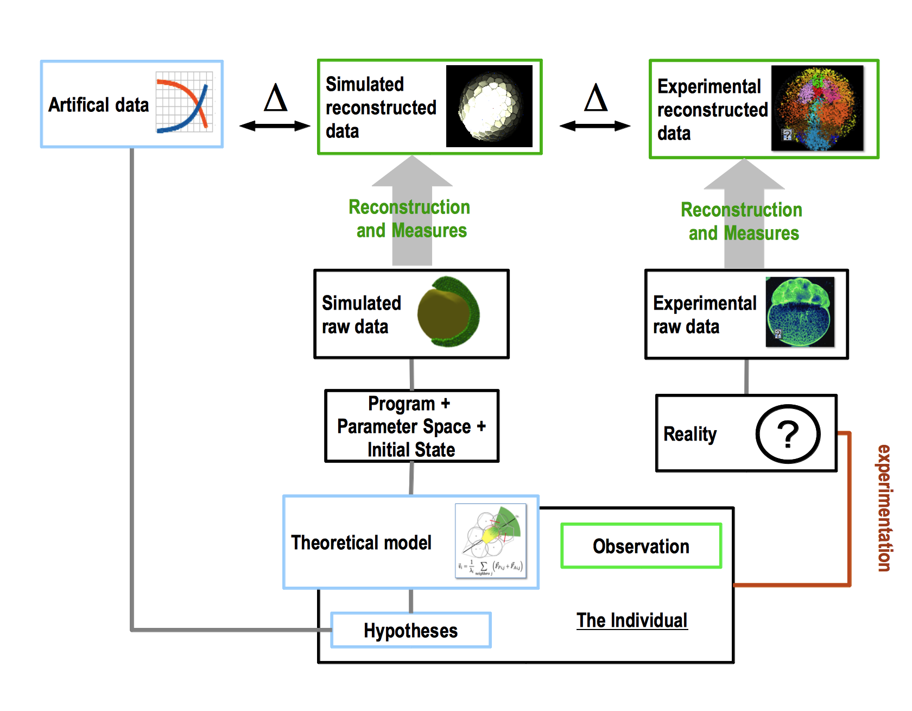
Chapter 8 involves all the components of the methodological workflow introduced in Section 1.1.3.
8.1. Investigating the Yolk Biomechanical Properties
We assume that the early development of the embryo depends on viscoelastic properties of the yolk. Using our simulation framework, our aim is to identify these properties by assessing their effect on later morphogenesis. In particular, we expect that yolk properties help maintain the integrity of the whole embryo, for example that the yolk should resist pressure exerted by the cells. At the same time, it should also undergo successive transformations by flattening at the sphere stage, and protruding at the doming stage. In addition, its active role in gastrulation is highly debated . Several of these aspects will be investigated in the following sections. We show here that minimal viscoelastic properties are sufficient to account for some of the embryo's phenotypic features throughout cleavage and gastrulation.
8.1.1. Hypotheses and Model
Our model is based on state-of-the-art observations. The zebrafish zygote is a large cell filled with cytoplasm and lipid droplets. These two fluids start to segregate before the first divisions, then the cytoplasm is gradually sucked into the dividing cells (Fig. ). A lipid bilayer membrane progressively separates the cells at the animal pole from the lipid droplets, forming an independent structure called the yolk cell. After the \(9^{th}\) division cycle, the marginal deep cells divide with one daugthter cell fusing with the yolk, forming a structure just beneath the cells called the yolk syncytial layer (YSL). Another layer, the yolk cortical layer (YCL), completely envelops the yolk (See below).
Third harmonic generation (THG) imaging of the zebrafish embryo adapted from . Snapshots from the movie going from the one-cell stage to the 64-cell stage. Developmental timing (min) indicated top left. Scale bar (100 microns) indicated bottom left.
In this context, from the zygote stage, we make the approximation that the cells and the yolk are independent structures—but to capture their dynamical mechanical interactions, we model both of them in the same particle-based paradigm. Furthermore, we hypothesize that it is relevant to distinguish between an external yolk membrane (ym), which is composed of the YSL and YCL together, and the inner lipid droplets, or yolk interior (yi). Thus we use three types of particles: one for the cells (displayed in green in Fig. ) and two for the yolk: the membrane particles (in yellow) forming a 2D viscoelastic layer, and the interior particles (in red) representing the lipid droplets confined by the external layer. We expect the external membrane to keep its surface topology, whereas the internal structure can rearrange itself. This is a qualitative interpretation of imaging that provides plausible properties ().
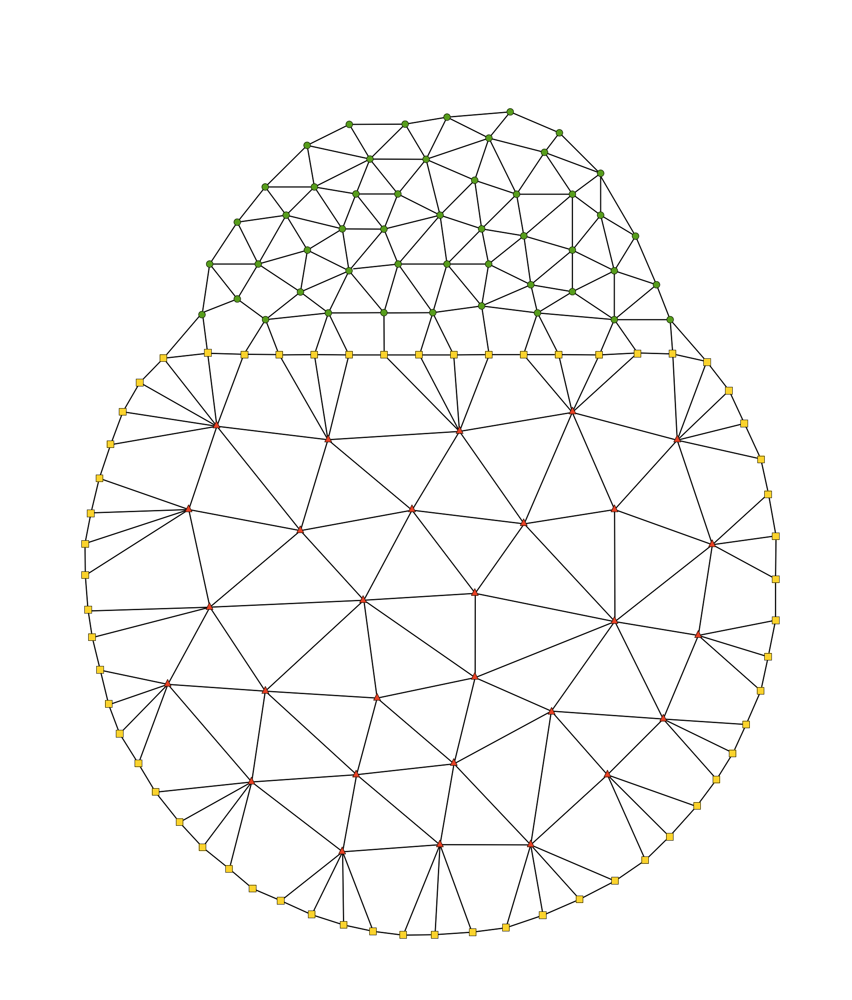
Abstract schema of the particle types in the modeled embryo. Green particles represent the cells, yellow particles the external yolk membrane (ym), and red particles the inner lipid droplets or yolk interior (yi).
The yolk membrane (ym)
In Fig. , the yellow particles materialize the yolk membrane. Note that, whether we are talking of the YSL or the YCL, this yolk membrane is not only composed of a lipid bilayer but also a cytoskeleton that underlies it (acto-myosin network, micro-tubules, etc.). Here, the membrane topology is defined by a geodesic dome derived from an icosahedron, one of the five Platonic solids, which remains invariant through time. An icosahedron's surface is composed of 20 identical equilateral triangles, 12 vertices and 30 edges. This topology is refined by subdividing each triangle into four new identical equilateral triangles. The new vertices are projected on the sphere. This process is repeated 4 times to approximate a spherical shape with 5120 triangles and 2562 vertices (Fig. ). Although other Platonic solids could have been used without much difference, the icosahedron offers a better trade-off between stability (its elementary faces are triangles) and volume maximization (only the dodecahedron occupies a slightly larger volume, but its faces are pentagonal). In our geodesic dome, each vertex except the original 12 has 6 direct neighbors, the original vertices having only 5 direct neighbors. These direct neighbors are labeled rank-1 neighbors. For each ym particle \(i\), this neighborhood is denoted by \(\mathcal{N}^{\mathrm{ym},1}_i\).
The forces exerted between ym particles are pure elastic forces. Each rank-1 neighborhood relationship is materialized by a linear spring, so that between two ym particles \((i,j)\), the force is simply:
where \(k_{\mathrm{ym}}\) is the stiffness constant controlling the ability to deform the neighborhood link under a given force applied to it (a higher \(k_{\mathrm{ym}}\) creating a stiffer resistance), and \(r^{\mathrm{eq}}_{ij}\) is the resting length of the neighborhood link (i.e. its length if no force is applied). Each ym-to-ym link has its own characteristic resting length. It is defined by the length of the link when the ideal geodesic dome is projected on a sphere whose volume is equal to the desired total yolk volume \(V_{\mathrm{Y}}\), i.e. the radius is \(R_{\mathrm{Y}} = (3V_{\mathrm{Y}}/4\pi)^{1/3}\). Concretely, the dozen 5-neighbor vertices have shorter resting lengths than all the other 6-neighbor vertices. Without this rescaling, the equilibrium shape would converge toward the original Platonic solid and not toward the sphere.
Since the ym neighborhood topology is invariant (ym particles do not swarm, so the geodesic links remain the same), there is no plasticity in the yolk membrane alone. The original shape is recovered after local mechanical deformation (local pushing or pulling). Beyond a certain level of stress, however, the membrane mesh may get entangled and erratic behavior may occur. This is illustrated by an abnormal lip formed by the yolk membrane when ym particles are only interacting with their rank-1 neighbors (Fig. A). We hypothesize that increasing the ym stiffness and the spatial range of particle interactions would prevent this undesirable feature. When constraining ym particles to rank-1 and rank-2 interactions, the blastoderm-yolk margin remains smooth (Fig. B). Rank-2 neighbors of a yolk membrane particle are defined as the set of rank-1 neighbors plus their rank-1 neighbors (Fig. F). All the corresponding links are materialized by linear springs with the same stiffness coefficient \(k_{\mathrm{ym}}\) and resting lengths \(r^{\mathrm{eq}}\) defined by the same procedure as rank-1 neighbors. The rank-2 neighborhood set is denoted by \(\mathcal{N}^{\mathrm{ym},2}_i\).
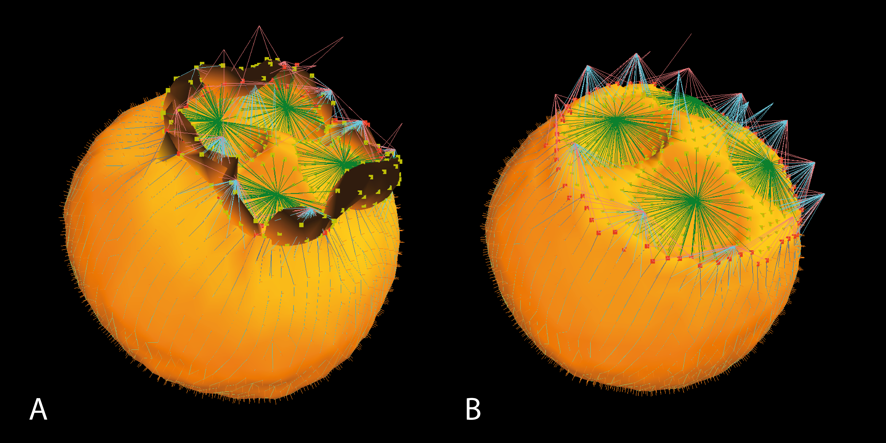
Yolk membrane behavior depending on its particles' topological interactions. A: rank-1 interactions only. B: rank-1 + rank-2 interactions.
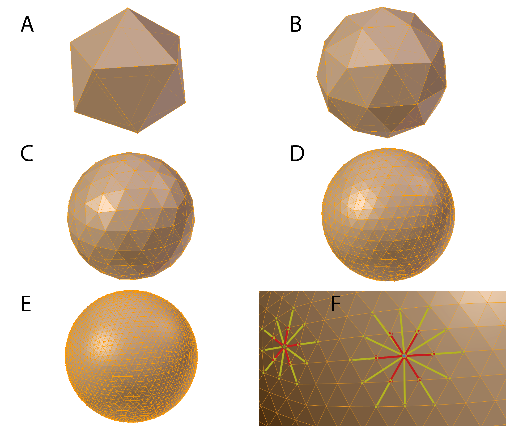
The structural topology of the yolk membrane is a geodesic dome. A: Icosahedron. B,C,D,E: iterative subdivision of the original icosahedron to obtain the geodesic dome. F: the right vertex is a regular geodesic vertex and the left vertex is one of the 12 original icosahedral vertices. Rank-1 neighbors link in red, rank-2 neighbors link in yellow.
So far, we have idealized the yolk membrane as an empty balloon. It must now be filled with a viscous fluid. In the real yolk, if the yolk membrane is damaged, inner material is expelled out of the membrane. This indicates that the inside pressure is higher than the outside. We hypothesized that this difference of pressure is due to the cortical tension exerted by the yolk membrane and introduce an additional parameter: \(c_r \lt 1\), which is a dimensionless coefficient reducing the resting lengths within the yolk membrane. The above force equation then becomes:
The yolk membrane as modeled above has the ability to absorb and recover from tangential load but can hardly resist any load applied in a non-tangential manner. Inspired by the lipid droplets contours revealed by THG signals in Fig. , we fill the yolk interior (yi) with \(N_{\mathrm{yi}}\) identical particles of volume \(V_{\mathrm{yi}}\) and radius \(R_{\mathrm{yi}}\) (red points in Fig. ). Practically, \(N_{\mathrm{yi}} = 500\) particles were added in our simulation, which is less than the number of lipid droplets estimated from the 3D data, and represents a coarse-grained approximation. We assume that the ym particles' radius is equal to the yi particles' radius, so that the volume occupied by the \(N_{\mathrm{yi}}\) particles is equivalent to the volume of a sphere minus the thickness of the ym layer, i.e. whose radius is \(R_{\mathrm{Y}} - R_{\mathrm{ym}} = R_{\mathrm{Y}} - R_{\mathrm{yi}}\).
and with \(R_{\mathrm{Y}} \gg R_{\mathrm{yi}}\), we get \(R_{\mathrm{yi}} \approx R_{\mathrm{Y}} (N_{\mathrm{yi}})^{1/3}\). We apply the same rules as the ones described for cell-cell interactions in Chapter 3 to ym-yi and yi-yi pairs of particles. As in Section 3.2.2, the neighborhood of interactions is recalculated at every time step of the simulation, first through a metric criterion then by topological selection. This adaptive topology provides to the yolk a certain plasticity through passive rearrangement of the yi particles. Both ym-yi and yi-yi interaction forces have the same expression as the passive attraction/repulsion forces between deep cells particles (see Section 3.2.3):
where y stands for either ym-yi or yi-yi types of interactions, and \(w^{\mathrm{y}}_{\mathrm{adh}}\) and \(w^{\mathrm{y}}_{\mathrm{rep}}\) are unique yolk-specific stiffness coefficients common to both types.
Parameter space for the biomechanical properties of the yolk
In summary, putting together the ym and yi force expressions above, the equation of motion of the \(N_{\mathrm{ym}}\) particles of the yolk membrane reads:
where neighborhood \(\mathcal{N}^{\mathrm{ym},2}_i\) contains only ym-type particles and \(\mathcal{N}^t_i\) contains both ym and yi types. This system of equations is controlled by the following parameters: \(\lambda_0\), \(w^{\mathrm{y}}_{\mathrm{adh}}\), \(w^{\mathrm{y}}_{\mathrm{rep}}\), \(k_{\mathrm{ym}}\), \(c_r\), the simulation time step \(\Delta\!t_s\) and a number of other background parameters such as \(R_{\mathrm{ym}}\), \(R_{\mathrm{yi}}\), \(a\), and \(c^{\mathrm{max}}\) (in the expression of \(A_{ij}\)), which were a priori fixed or pre-calibrated when designing the simulation. The simulation, parameter space exploration and validation process described in the next subsection will allow us to estimate realistic values for the following ratios:
the last two undetermined or free parameters being the yolk membrane surface scaling parameter \(c_r\) and the simulation time step \(\Delta\!t_s\).
8.1.2. Simulation, Parameter Space and Validation
We expect the yolk to exhibit a specific behavior of deformation under external stress followed by a behavior of resilience through recovery. In order to assess the relevance of these properties, we designed an experimental protocol applied to both live specimens and simulated ones. As in most of the case studies explained in this Chapter 8, confronting measurements in both cases is our strategy to explore the parameter space, with the goals of:
qualitatively discussing the fitness landscape, and
finding optimal parameters.
Experimental protocol: live specimen
A spherical 1-cell-stage embryo lying on its side in an agarose mold, a glass bead is pressed on the lateral side of the embryo for a period of time \(\Delta\!T\), starting at \(t_0\). The force is applied along an axis parallel to the agarose surface and, on the opposite side, the embryo is blocked by an agarose wall. Pressure is applied to the bead until it enters into the yolk by approximatively 40% of the yolk diameter. At \(t_1 = t_0 + \Delta\!T\), the bead is removed and the yolk progressively recovers its initial shape. The operation is recorded with a 3CCD camera (Hitachi HV-D20) on a Leica MZ16F stereo microscope (Movie ).
Experimental deformation of the egg yolk.
Qualitatively, the yolk is deformable with the yolk membrane surrounding the bead in a crater-like structure somewhat larger than the bead diameter. After removing the bead, the yolk quickly recovers its shape. The following measurements allow us to quantify this process. We measured every time interval \(\Delta\!t_{\mathrm{y}} =\) 0.8 second the normalized length of the yolk along the compression axis, defined as the ratio of the deformed embryo's diameter \(L\) over the relaxed embryo's diameter \(L_{\mathrm{rel}}\) before compression.
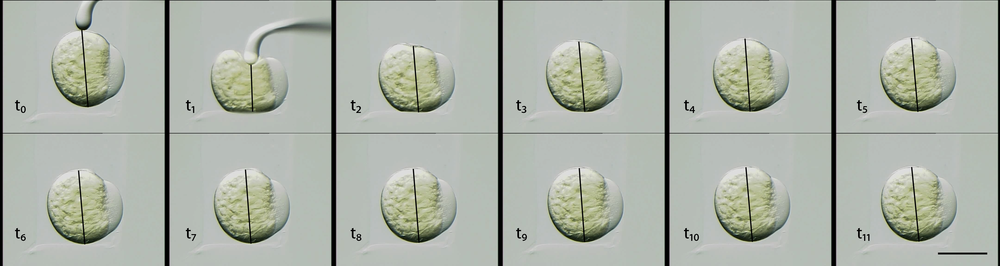
Experimental deformation of the egg yolk. 1-cell stage, lateral view, animal pole to the right. \(t_0\): Onset of the deformation. \(t_1\): Maximum deformation. Measurement is realized every 0.8 second. We measure the distance \(L\) between the area pointed by the tip of the bead and the opposite side (black line). Scalebar 500 microns.
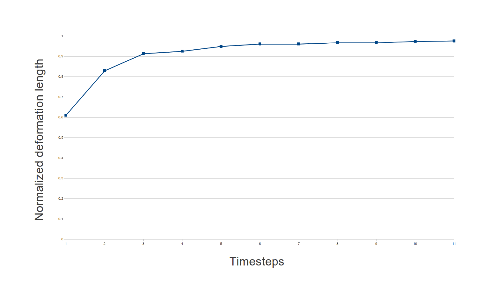
Plot of the normalized deformation length as a function of time. The shape recovery is asymptotic toward the normalized length at \(t_0\). Full recovery is nearly achieved by 8 seconds.
Experimental protocol: simulation
The simulated experimental protocol mimics the live one described above. The algorithmic implementation of the model integrates an artificial spherical bead which is forced to move toward the center of the yolk. Yolk particles, whose original positions are now occupied by the bead, are displaced by being projected on the bead's surface. Similarly to the experimental live protocol, we specify the force necessary to induce the particles' motion but impose their displacement. The ball is removed when it has sunk to a depth equal to 40% of the initial yolk diameter.
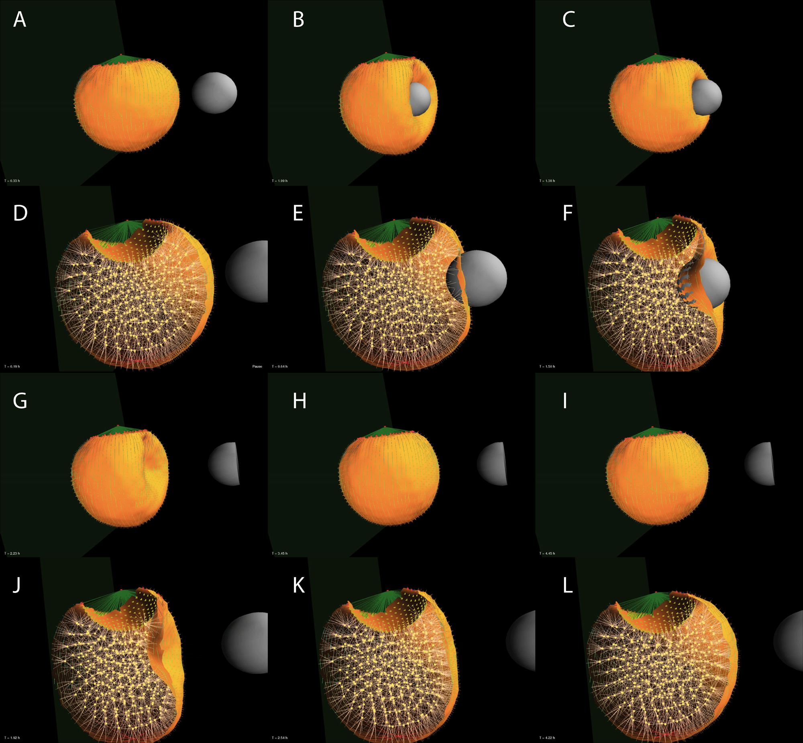
Snapshots of the simulated deformation and recovery. First and third rows: entire yolk from an external point of view. Second and fourth rows: another yolk sliced to reveal the yolk interior particles. A,B,C,D,E,F: compression phase. G,H,I,J,K,L: relaxation phase. Note that these simulated experiments have been realized by manually operating the spherical bead, whereas in the study the manipulation is automated. Original movies are available in Figs.
Fitness function
We define a fitness function \(F_{\mathrm{Y,rel}}\) which allows us to confront the simulations and the measurements: it is an integral of the evolution (here, a discrete sum over time) of the absolute difference between the live and the simulated normalized length, starting at time \(t_1\) when the pressure is removed, and ending at \(t_n = t_1 + (n-1)\,\Delta\!t_{\mathrm{y}}\) with typically \(n=10\). Denoting by \(L^{\mathrm{s}}(t)\) and \(L^{\mathrm{v}}(t)\) the deformed yolk diameters of the simulated and the live (in vitro) specimens measured at time step \(t\), the equation of the fitness function reads:
where \(L^{\mathrm{s}}_{\mathrm{rel}}\) and \(L^{\mathrm{v}}_{\mathrm{rel}}\) are the initial uncompressed yolk diameters. Note that the lower the fitness values, the better the match.
Fitness landscape
We explore the parameter space of the simulation to find the best match with the measurements. This space is 4-dimensional, comprising \(\overline{w}^{\mathrm{y}}_{\mathrm{adh}}\), \(\overline{w}^{\mathrm{y}}_{\mathrm{rep}}\), \(\overline{k}_{\mathrm{my}}\), and \(c_r\), and was regularly sampled over the following ranges with the following numbers of values (cardinalities):
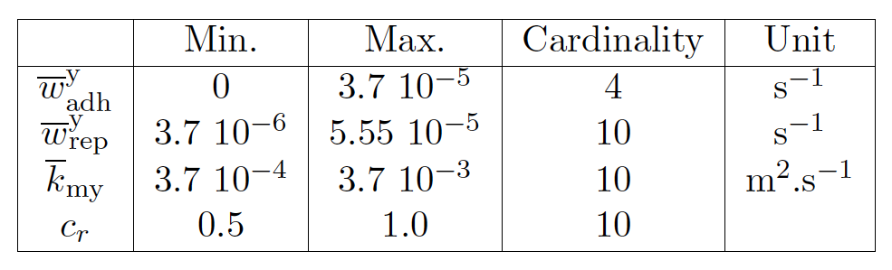
Ranges, cardinalities and units of the four parameters explored in this study.
For each realization, i.e. simulation under a particular set of parameters, the fitness is evaluated. The simulation time step \(\Delta\!t_s\) has been calibrated to match the slope of the relaxation curve obtained in the live experiment (Fig. ) and its calibrated value is here \(\Delta\!t_s =\) 6.66667 milliseconds. This means that the yolk measurement time step \(\Delta\!t_{\mathrm{y}}\) of 0.8 seconds is equivalent to 120 simulated time steps.
Plots of the simulated normalized deformation length as a function of time. The black thick curve represents the experimental live measurement. The simulated measurements are colored according to their fitness value (from red for the best fitness \(F = 0.1609\) to blue for the worst \(F = 7.1449\)). In ordinate, the normalized length of the yolk diameter is plotted. In abscissa, the time from the moment the bead is pulled away from the yolk surface.
This plot indicates that the simulated phenotype leads to a relaxation profile similar to the profile provided by the live experiment. However, another representation was needed to visualize the fitness pattern in the 4D parameter space. We developed an interface displaying the fitness as a 3D cube and selecting the fourth dimension manually (Figs. , , and ).
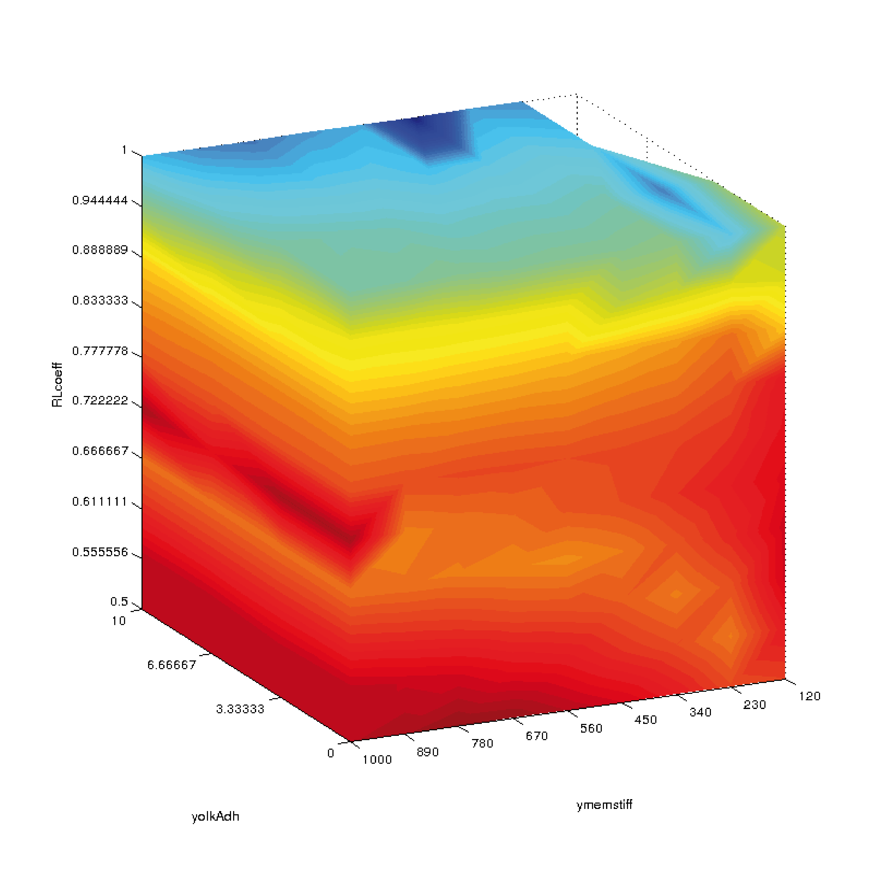
An example of 3D plot of the fitness landscape in parameter space. This figure aims at presenting the coordinate system used in Fig. and Fig. . Here, the repulsion coefficient \(\overline{w}^{\mathrm{y}}_{\mathrm{rep}}\) of the force exerted between yolk interior particles has a fixed value \(3.7\) \(10^{-6}\). The vertical axis is the coefficient \(c_r\), which determines the equilibrium surface of the yolk membrane. The depth axis is the adhesion coefficient, \(\overline{w}^{\mathrm{y}}_{\mathrm{adh}}\) which modulates the cohesion of the yolk interior particles. The width axis is the yolk membrane stiffness coefficient \(\overline{k}_{\mathrm{ym}}\). It should be noted that the values plotted on the depth (resp. width) axis actually correspond to \(w^{\mathrm{y}}_{\mathrm{adh}}\) (resp. \( k_{\mathrm{ym}}\)) and should be divided by \(\lambda_0\) to match the values of the table presented in Fig. .
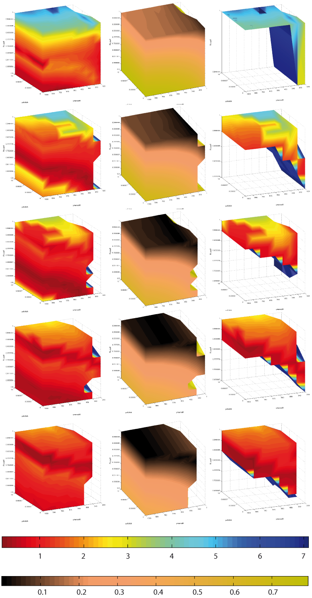
Fitness landscape of the yolk relaxation experiment.
The left column represents the fitness landscape in parameter space. The middle column shows the normalized yolk volume difference between the simulated phenotype and the targeted volume of radius \(R_{\mathrm{Y}}\). The right column is identical to the left one but keeping only the phenotypes that have a yolk volume less than 20 percent different from the targeted one. All the coordinates are described in Fig. . Each row corresponds to a different value of the coefficient of repulsion between yolk interior particles \( \overline{w}^{\mathrm{y}}_{\mathrm{rep}} \). The value of \( \overline{w}^{\mathrm{y}}_{\mathrm{rep}} \) varies regularly between \(3.7\) \(10^{-6}\) for the top row to \(5.55\) \(10^{-5}\) for the bottom row.
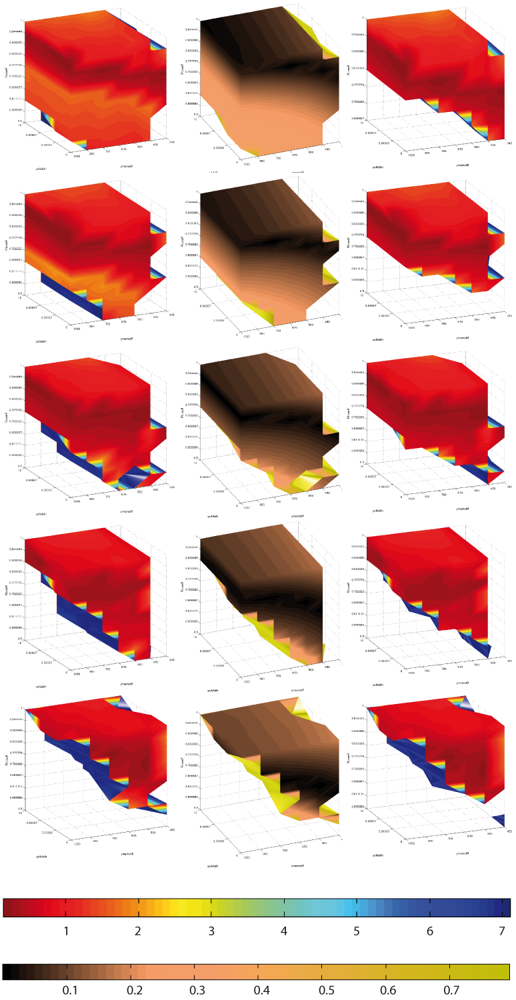
Fitness landscape of the yolk relaxation experiment. For caption, see Fig. .
Fitness pattern analysis
We can observe patterns of low (i.e. optimal) fitness values in the left column. The shape of the isofitness patterns shows no changes along the depth axis, indicating that the adhesion coefficient between yolk interior particles does not impact the relaxation behavior of the yolk. Therefore, we can interpret these results by saying that it is the yolk membrane properties (stiffness and surface equilibrium) that account for the behavior of the system.
However, low values of yolk interior particle repulsion do induce a shrinking of the total yolk volume, as it can be seen in rows 1 to 5 of Fig. . Conversely, as the yolk interior repulsion increases, the total yolk volume increases. From a biological point of view this feature does not make much sense as we would rather expect the yolk to be incompressible, thus it rather points to one of the limits of our model. For this reason, we decided to limit the exploration of the parameter space to repulsion coefficient values that keep the yolk volume within a 20 percent variation of the targeted volume (right column).
In addition, when the yolk interior repulsion increases and the membrane stiffness is too high for a small yolk equilibrium surface, the numerical simulation of the model diverges and the phenotype can no longer be computed. This creates more and more missing points in the left and central column from the top to the bottom rows. The useful space displayed in the right column indicate a single layer of low fitness value and the spatial orientation of this layer shows the benefits of increasing membrane stiffness and membrane surface equilibrium.
Therefore, the model suggests that the yolk membrane is responsible for the yolk relaxation behavior, the yolk interior particles only filling the space and maintaining the yolk volume. Again, yolk membrane here refers to membrane and cortex together, thus from a biological point of view the low fitness domain provides indications of appropriate surface equilibrium values for the yolk membrane + cortex ensemble.
8.1.3. Discussion
This very simple case study already illustrates both the potential and the limitations of our model, raising a number of generic questions. The choice of an agent-based framework led to the representation of the yolk and yolk membrane as collections of interacting particles. If this type of model seems indeed appropriate to mimic some of the observed properties of the biological system under study, the effect of yolk interior particles' repulsion and attraction coefficients on the yolk volume is unlikely to be very biologically relevant. We would rather think of the yolk interior as an incompressible liquid, although this hypothesis has not been validated experimentally either. In any case, large variations created by simulation must always be discarded as artifacts. Still, such shortcomings do not prevent exploring the membrane properties within a reasonable range of values and try to give a biological interpretation to the resulting fitness landscape.
The numerical implementation of the model contains a number of difficulties, including instabilities of the numerical integration that prevented to complete the calculation of certain phenotypes. It could still be said, however, that most of the parameter space points that were not explored were actually unlikely to correspond to the best fitness pattern. In addition, the computation time step that had to be set to fit the experimental scenario of the yolk relaxation is far too small, hence computationally expensive, for the simulation of embryo development until the end of gastrulation, i.e. 10 hours post fertilization (hpf).
Interpreting the calculated fitness landscape first raised the problem of the representation and visualization of high-dimensional data. Furthermore, we did not fully explore the parameter space here. Some of the observed behaviors suggest that several isofitness layers are created by exploring the yolk interior's repulsion values. From row 4 in the left column of Fig. , the coexistence of two low isofitness layers suggests that a periodic behavior might happen. Further exploration of values along the vertical axis should be done. Hence, we so far have no conclusive explanation of this behavior of the model. In general, the biological and quantitative interpretation of this model is an issue. We expect at some point to be able to derive realistic physical quantities from the simulation parameters. Since the simulation values are scaled by the viscosity factor \(\lambda_0\), additional stress-strain measurements would be needed to tune this parameter other than arbitrarily.
In conclusion, this simple experimental protocol should open the way to a more extensive study that would (i) provide measurements for a cohort of individuals, (ii) compare the yolk behavior in different locations at different developmental times, (iii) control the applied force and possibly replace the pushing strategy by pulling with a known aspiration force. In addition, the measurement of the deformation might be more precise and accurate than accomplished here. Finally, in addition to designing a fitness function and finding its optimal (i.e. lowest) values, the model should also propose a definition for a domain of viability. The fitness landscape and domain of viability might then be adjusted together by exploring other desirable properties of the yolk compatible with later morphogenetic events, such as doming or the typical constriction accompagnying gastrulation movements.
8.2. Cell Proliferation Rate Along the Cell Lineage
Cell proliferation increases the number of embryonic cells and is the basis for cell diversification in time and space. The proliferation rate of embryonic cells is characteristic of their potentialities and is subjected to regulation in time, then in space, leading to different mitotic domains and, at later embryonic and larval stages, to cell populations with very different proliferation rates.
Our model should be useful to test different theoretical rules modulating the cell proliferation rate along the cell lineage. However, except for the cells of the enveloping layer (EVL; see Section 8.4), the cell cycle in our model is uncoupled from other cellular mechanisms and in particular from biomechanical properties. This means that we are not making any hypothesis on the possible correlation between the cell cycle length and morphogenetic events. However, we should be able to investigate the possible correlation of cycle length with cell volume and test simple lengthening rules, such as a geometric progression, which were proposed by state-of-the-art studies .
Proliferation during cleavage stages is under maternal control. Proliferation along the cell lineage has been measured precisely for the first 10 cell cycles in early zebrafish embryos by Olivier et al. (Fig. ).
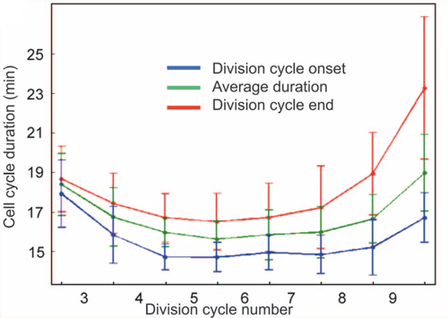
Mean cell cycle duration (green) compared with cycle duration at the beginning (blue) and the end (red) of the division cycle, averaged over six embryos. Image and caption adapted from .
This quantitative study suggests a single dynamic regime for this developmental period, during which the cell cycle length is first shortening then lengthening, although this variation in duration remains quite small (no more than a few minutes). Cell cycle lengthening is supposed to reflect the exhaustion of maternal factors driving the cell cycle progression. It has been postulated that the lengthening of the cell cycle during blastula stages correlates with the ratio of the nucleus size over the cell size. This correlation, however, would not exist any longer by cell cycle 14 . In Olivier et al. , no correlation was found between cycle duration and cell volume for the first 10 cell cycles. Rather, cell cycle length was observed to be dependent on the cell position within the blastoderm. That study proposed that division asynchrony is the rule and increases from cycle 2 to cycle 10 (Fig. ).
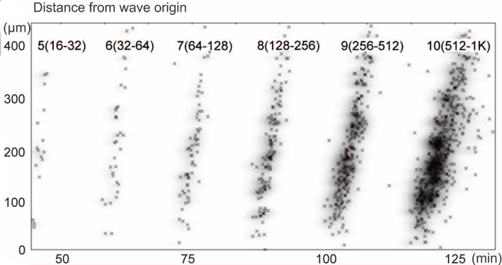
Scatter plot of mitosis time as a function of distance to the pseudo-wave origin. Image and caption adapted from .
This conclusion differs somewhat from the work by Kane and Kimmel indicating a measurable asynchrony by the midblastula transition only (Fig. ). This discrepancy might however solely reflect the measurements method's sensitivity and precision.
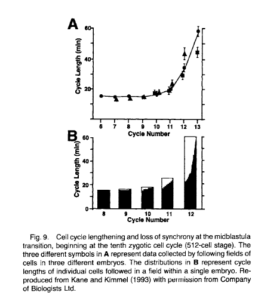
Cell cycle lengthening and loss of synchrony at the midblastula transition. Adapted from .
Measurements plotted in Fig. highlight the progression of cell cycle duration throughout the midblastula transition starting at cycle 10 (512 to 1024 cells, 3 hpf). The cell cycle length increases very significantly as soon the zygotic transcription begins and throughout cycles 11 and 12 . Cycle 12 should be completed around the sphere stage (4 hpf). According to Kane and Kimmel , cell cycle lengthening would respond to a single dynamical regime during blastula and early gastrula stages, with the cell cycle length progressing as a linear function of 1/cell volume (Fig. ). Such a correlation would lead to a geometric progression of cell cycle lengthening, doubling at each cycle. It should however be noted that this rule does fit with the measurements provided in the paper.
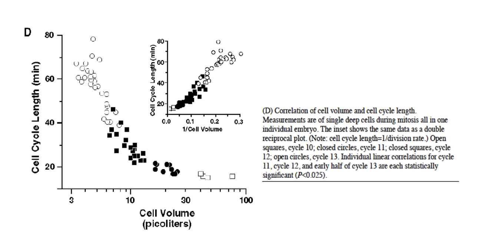
Correlation of cell volume and cell cycle length for cycles 10 to 13. Adapted from .
According to Kane and Kimmel, gastrulation would proceed during cell cycle 14. Cell proliferation during gastrulation continues to slow down dramatically so that, on average, cells divide only once between 6 and 10 hpf. It has also been shown that gastrulation is not impaired by the inhibition of cell divisions. If cell proliferation is indeed required to provide a minimal number of cells for further morphogenetic movements, gastrulation appears quite robust to perturbations of the cell cycle. For example, in emi1 (early mitotic inhibitor-1), homozygous mutant defective in the expression of this negative regulator of the Anaphase Promoting Complex , gastrulation and somitogenesis proceed while mitotic activity stopped at the beginning of gastrulation (shield stage 6 hpf).
The state-of-the-art data and analysis leave open a number of questions. First, precise measurements of the cell cycle duration along the cell lineage and other parameters including the cell volume and nucleus volume, when discussing correlations between the cell cycle length and the cell volume or nucleo-cytoplasmic ratio, are lacking except for the first 10 cycles . Without precise phenomenological reconstructions, it is very difficult to make relevant hypotheses on the dynamic regimes controlling the cell proliferation rate along the cell lineage. The model proposed by Kane and Kimmel for the progression of the cell cycle duration in 1/V readily leads to a geometric progression rule that should be further tested and discussed. In addition, increasing asynchrony of cell divisions should be better characterized to provide the most precise phenomenology for a further investigation of the underlying mechanisms.
8.2.1. Hypotheses and Model
In our model, we make the approximation that through the first 10 divisions, cell cycle length is constant and constrained to reach the 1,000-cell stage by 3 hpf, i.e. at the time of midblastula transition. We are then looking for an appropriate model of cell cycle lengthening and subsequent desynchronization. Our approximation does not exclude, however, that the desynchronization might obey the same rule throughout the first 14 or 15 cell cycles. From the study by Kane and Kimmel , we understand that the cell cycle duration might slow down according to a geometric progression. Indeed, the authors suggest a progression as a linear function of 1/V. As cells are expected to divide at constant volume until the end of gastrulation, the cell volume should be divided and the cell cycle should double. Yet, as already discussed, this does not match the data (Fig. ).
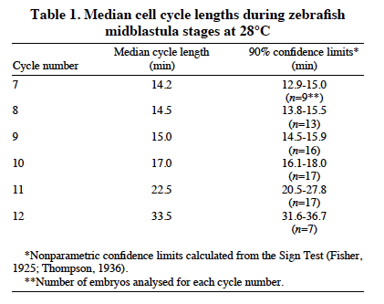
Median cell cycle lengths during blastula stages. Adapted from .
We propose to test two different hypotheses corresponding to either a geometric or an arithmetic progression of cell cycle lengthening. In each model, two parameters determine the cell cycle progression: one for the mean of the distribution and the other for its range. In the following, the length of the cell cycle is denoted by \(L_{\mathrm{cc}}\). It is function of an integer value \(n\) representing its iteration, e.g. \(L_{\mathrm{cc}}(12)\) is the length of the 12\(^{\mathrm{th}}\) cell cycle. The iteration from which the cell cycle increases is denoted by \(n_{\mathrm{start}}\) and the last iteration by \(n_{\mathrm{end}}\). Similarly, the timing of a cell cycle is denoted by \(T_{\mathrm{cc}}\).
Geometric progression of the cell cycle
A geometric progression of the cell cycle iteratively multiplies the length of the cell cycle by a value, the common ratio, denoted by \(r\):
$$\forall n \in \left[ n_{\mathrm{start}}, n_{\mathrm{end}} \right], L_{\mathrm{cc}}(n+1) = r \cdot L_{\mathrm{cc}}(n)$$
We suppose that the common ratio follows a uniform distribution centered on \(r_0\) and with a range of \(w_r\):
During the development of a simulated embryo, each cell division requires the generation of a new random common ratio \(r\) determined with the parameters \(r_0\) and \(w_r\). We also make the assumption that the cell cycle length is always increasing after each division, so the common ratio \(r\) must be larger than 1. It implies the following constraint on the parameters of the study:
$$w_r \leq 2(r_0 -1)$$
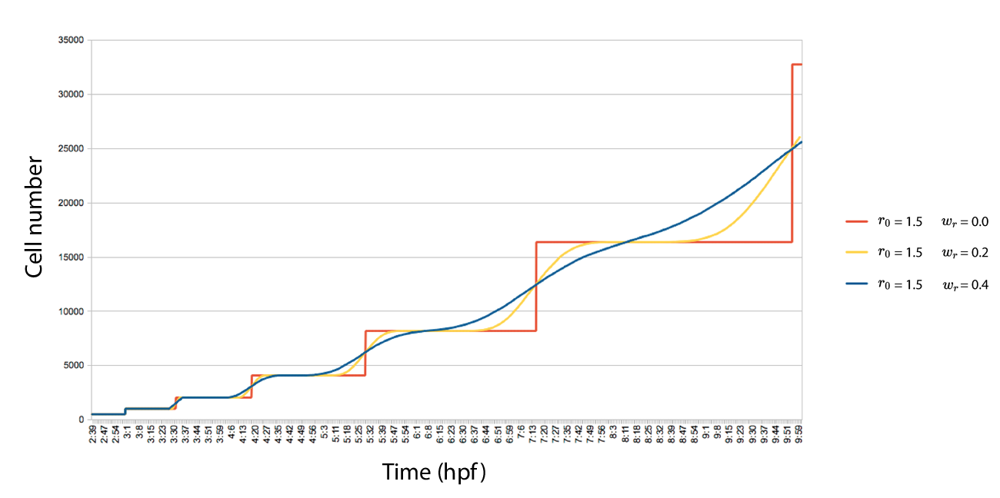
Theoretical cell number as a function of time of development in the geometric progression scenario. In ordinate, the number of simulated cells. In abscissa, time of development starting at 2h39. Three geometric progression scenario are plotted. Each of them starts from an initial simulated cell population comprising 512 cells with identical cell cycle length (see text), and identical common ratio (\(r_0 = 1.5\)). In red, the asynchrony is zero, all cells divide simultaneously at each cycle (\(w_r = 0\)). In yellow, cell cycles are desynchronizing reasonably at each cycle (\(w_r = 0.2\)), plateaus are still occurring in between mitosis cycles. In blue, a larger desynchronization (\(w_r = 0.4\)) leads to a progressive disappearance of the plateau as the cell population increases.
Arithmetic progression of the cell cycle
An arithmetic progression of the cell cycle iteratively sums the length of the cell cycle by a constant value, the common difference, denoted by \(d\):
$$\forall n \in \left[ n_{\mathrm{start}}, n_{\mathrm{end}} \right], L_{\mathrm{cc}}(n+1) = d + L_{\mathrm{cc}}(n)$$
As before, we assume that the common difference follows a uniform distribution centered on \(d_0\) and with a range of \(w_d\).
During the development of a simulated embryo, each cell division requires the generation of a new random common difference \(d\) determined with the parameters \(d_0\) and \(w_d\). We also make the assumption that the cell cycle length is always increasing after each division, so the common difference \(d\) must be larger than 0. It implies the following constraint on the parameters of the study:
$$w_d \leq 2 r_0$$
8.2.2. Simulation, Parameter Space and Validation
Cell cycle length measurement through the reconstructed lineage tree
To explore the parameter space and evaluate the fitness of the two hypothesized cell cycle rules (geometric and arithmetic), we manually selected a small population of cells from cell cycle 9 (512-cell stage) at approximately 2h40 hpf and followed them through the lineage tree produced by the reconstruction workflow (described in Chapter 7) until cell cycle 15.
Time-lapse movie of a developing zebrafish embryo. The embryo is imaged from the animal pole (slightly ventral). The movie starts at the 32-cell stage (Data set ID 071222bF, starting at 1h45min hpf) during the cleavage stages and goes on during the blastula and gastrula periods. By the end, only one layer of non-neural ectoderm remains between the yolk and the enveloping layer on the ventral side of the embryo. We need here the characteristics of the data, staining, voxel size timing.Manual tracking of a cell population through the Mov-It interface. The embryo shown in Fig. has been processed through the Bioemergences workflow. The yellow cubes correspond to the cells that have been manually corrected (position and tracking).
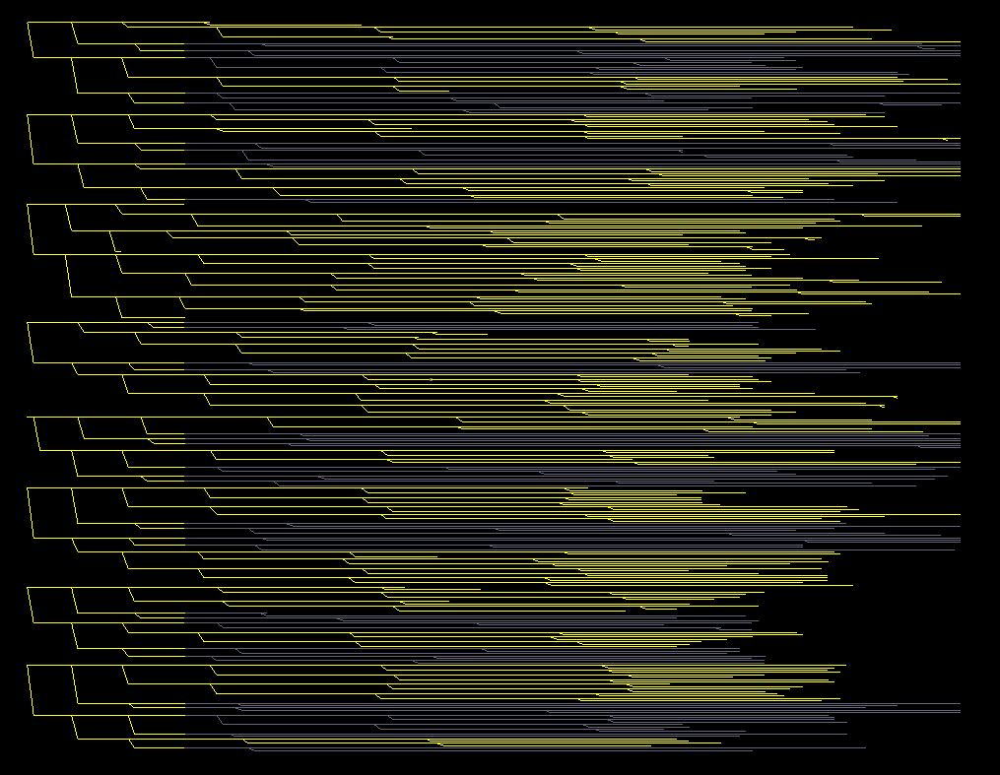
Lineage tree of the selected cell population. The selected population consists in eight cells picked at the time of cell cycle 9. At cycle 9 they divide quasi-synchronously (one cell out of the eight divides one time step, i.e. 3 min, after the others). The selected cells contribute to the formation of the EVL. As this differentiated tissue is expected to have a specific cell cycle dynamics (see Case Study 8.4), EVL cells were removed from the selected cell population after division cycle 11. EVL cell lineage removed from the analyzed data is indicated by the grey branches. Cell cycle 11 occurs at the onset of the epiboly at the time of doming, prior to what is usually considered as gastrulation (6 hpf). The selected cells tracking was checked and corrected as far as possible in time.
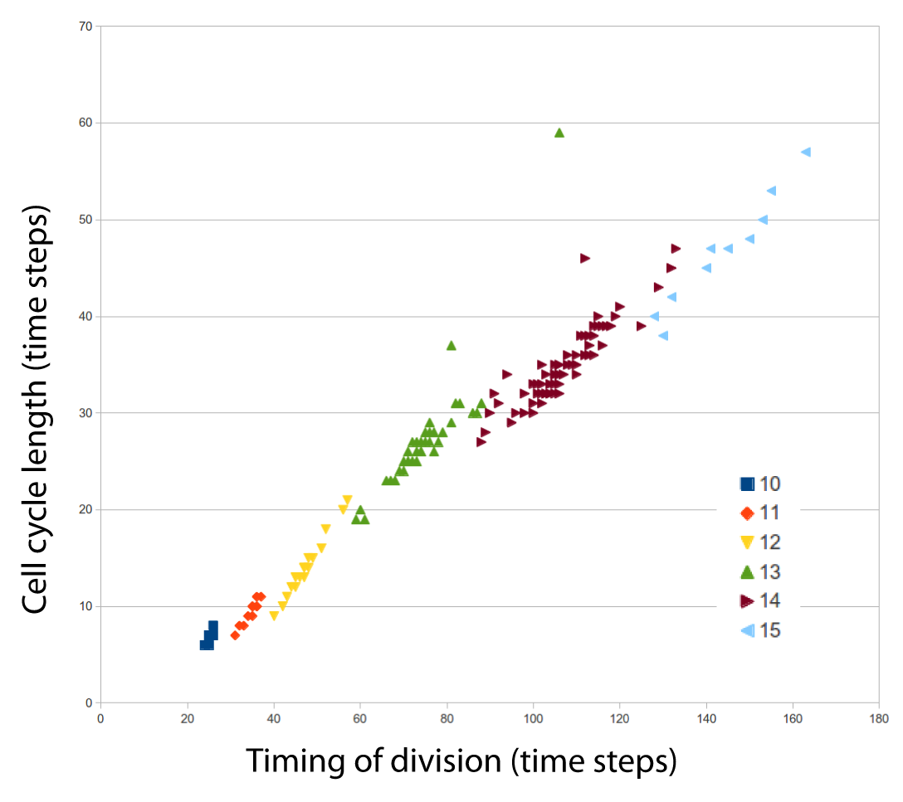
Plot of the cell cycle length for cells selected among the deep cells, as a function of the timing of the divisions. Colors and numbers represent the iteration of the cell cycle as indicated on the right. A cell is plotted at the time of a division as a function of the timing of its mother's division. Timing is indicated in time steps. Data manually validated by Ingrid Colin with Mov-IT.Selected cell population from the eight original clones. The color marks the current generation of the cell from 9 (blue) to 15 (red).
As we do not have the complete data for cell cycle 15, this data is not included in the study. In addition, we interpret the three points that are outside the clouds to be caused by tracking errors that were not found by eye inspection of the raw data. These three points have also been removed from the study.
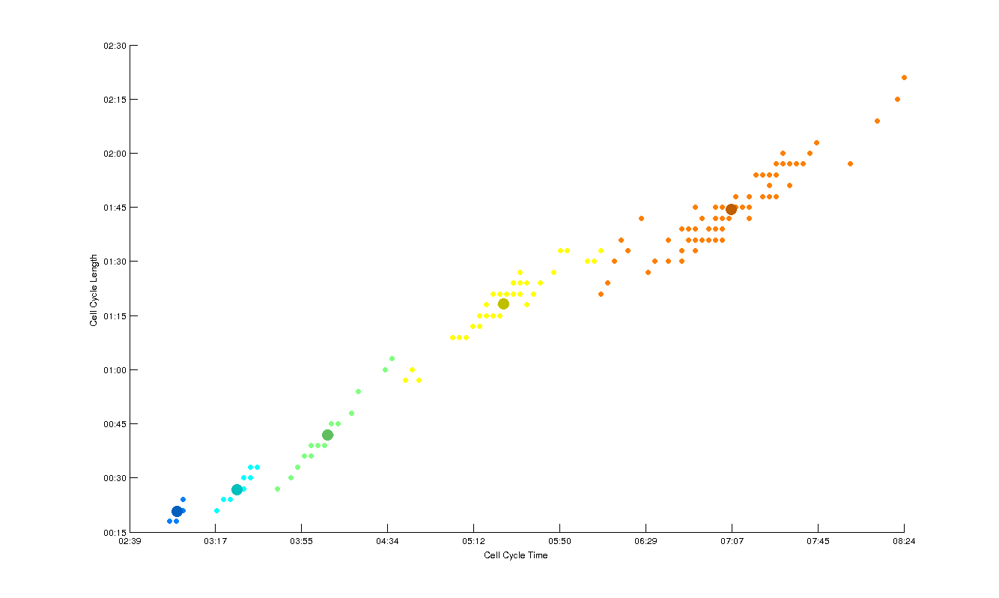
Plot of the cell cycle length as a function of the cell cycle time for the cell population selected in the digital specimen. The blue color represents the \(10^{th}\) cell cycle, light blue, the \(11^{th}\), green, the \(12^{th}\), yellow, the \(13^{th}\), and orange, the \(15^{th}\). Small dots correspond to single cells at the time of mitosis and large dots are the mean of the division timing for the corresponding cell cycle. The data is the same as Fig. without cell cycle 15 and after elimination of the three outliers discussed above. This data is used for confronting live experimental and simulated data.
Simulated cell cycles
We simulated two developments with respectively a geometric progression and an arithmetic progression of the cell cycle length between cycle 9 and cycle 14. To account for the desynchronization of the cell cycles, we took the common ratio and common difference as uniform distributions, as described above. We derived from these simulations the same kind of plot as for the live experimental data (Fig. ). However, unlike for the live experiment, we were able here to plot all the cells of the embryo.
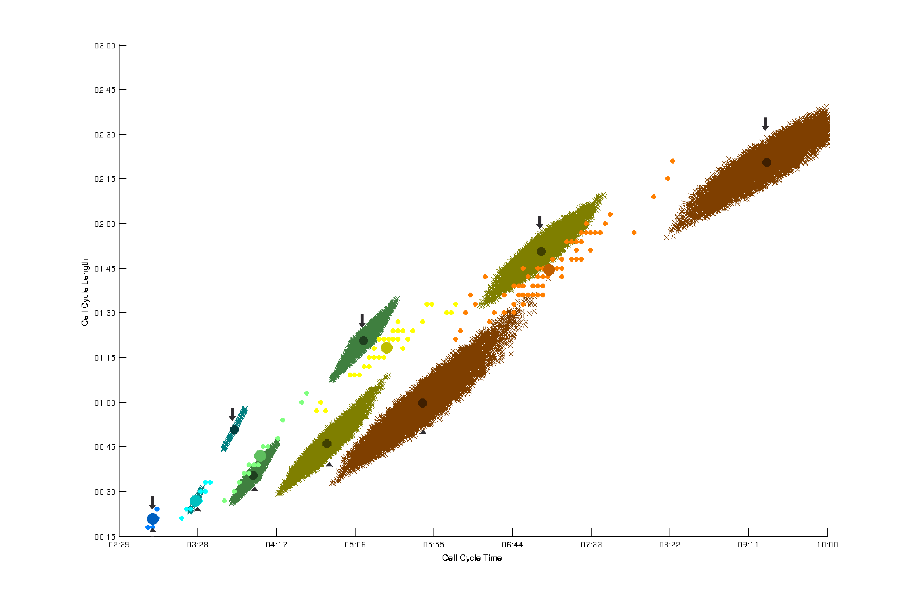
Plot of the cell cycle length as a function of the the cell cycle time for two simulated embryonic developments. In addition to the live cells plot, we provide two simulated distributions, one corresponding to a geometric progression, indicated by arrowheads (\(r_0 = 1.3\) and \(w_r = 0.4\), and one corresponding to an arithmetic progression, indicated by arrows (\(d_0 = 30 \mathrm{min}\) and \(w_d = 14 \mathrm{min}\)). For the sake of visualization, we picked here parameters that obviously did not provide the best fitness but kept the clouds separated.
Fitness function
The fitness function used to evaluate the adequacy of the proposed cell cycles is multi-objective. Four objective subfunctions will be evaluated for each set of parameters:
\(F_{\mu}(T_{\mathrm{cc}})\), the mean of the cell cycle timing for each generation,
\(F_{\sigma}(T_{\mathrm{cc}})\), the standard deviation of the cell cycle timing for each generation,
\(F_{\mu}(L_{\mathrm{cc}})\), the mean of the cell cycle length for each generation,
\(F_{\sigma}(L_{\mathrm{cc}})\), the standard deviation of the cell cycle length for each generation.
All four objectives are expressed through the same type of generic objective function:
where \(n_{\mathrm{start}}=10\), \(n_{\mathrm{start}}=14\), \(L_{\mathrm{cc}}^{\mathrm{v}}(n)\) (resp. \(T_{\mathrm{cc}}^{\mathrm{v}}(n)\)) is the ensemble of cell cycle timing (resp. length) measured on the real embryo at cell cycle \(n\), \(L_{\mathrm{cc}}^{\mathrm{s}}(n)\) (resp. \(T_{\mathrm{cc}}^{\mathrm{s}}(n)\)) is the ensemble of cell cycle timing (resp. length) measured on the simulated embryo at cell cycle \(n\), \(\mu\) is the mean operator and \(\sigma\) the standard deviation operator. Each absolute difference is normalized by the value of the experimental measure, such that the contribution of each cell cycle generation's mean or standard deviation has the same influence on the objective function.
These four objective functions are then merged into a global fitness function through a weighted sum method. Applied to the parameter space, this generates four objective landscapes for each proposed model (Fig. and Fig. ). As the aim of this study is to compare the two hypothesized cell cycle rules (geometric and arithmetic) through a global fitness function, each landscape value is normalized to contribute equally to the global fitness function. Various methods of normalization can be used . Here, we simply divide each objective function by the maximum objective function value over both cell cycle rule landscapes:
where \(F\) stands for any of the above four objective functions. The global fitness \(F_{\mathrm{cc}}\) function is then the average of the four normalized objective functions:
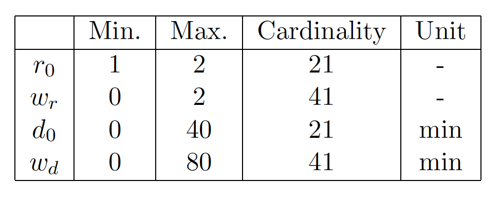
Ranges, cardinalities and units of the four parameters explored in this study.
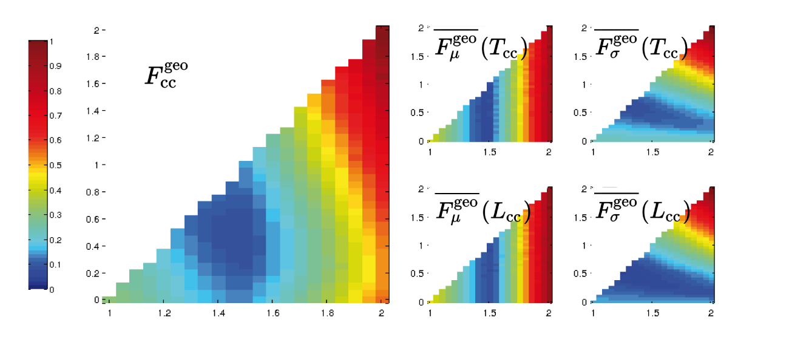
Fitness landscapes of the geometric progression rule in parameter space. The left plot is the global fitness landscape. In the right part of the figure: the top left plot is the landscape of the mean of the cell cycle time's normalized objective function \(\overline{F^{\mathrm{geo}}_{\mu}}(T_{\mathrm{cc}})\), the top right plot is the landscape of the standard deviation of the cell cycle time's normalized objective function \(\overline{F^{\mathrm{geo}}_{\sigma}}(T_{\mathrm{cc}})\), the bottom left plot is the landscape of the mean of the cell cycle length normalized objective function \(\overline{F^{\mathrm{geo}}_{\mu}}(L_{\mathrm{cc}})\), the bottom right plot is the landscape of the standard deviation of the cell cycle length normalized objective function \(\overline{F^{\mathrm{geo}}_{\sigma}}(L_{\mathrm{cc}})\). The color map of all five plots follows the same color bar presented on the left. Each plot provides the cell cycle distribution center \(r_0\) on the abscissa axis and the distribution range coefficient \(w_r\) on the ordinate axis. Both parameters are explored in the range presented in Fig.
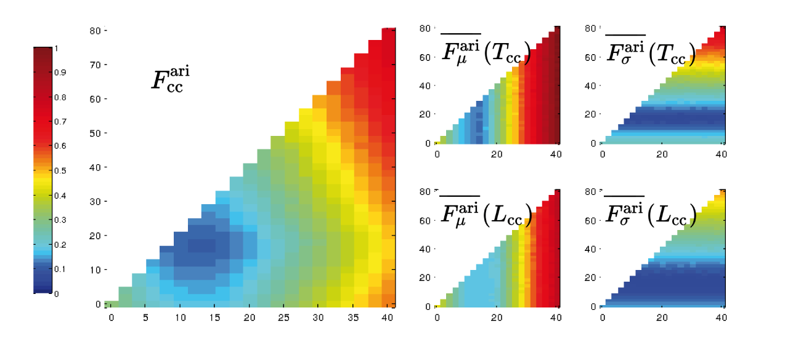
Fitness landscapes of the arithmetic progression rule in parameter space. The left plot is the global fitness landscape. In the right part of the figure: the top left plot is the landscape of the mean of the cell cycle time's normalized objective function \(\overline{F^{\mathrm{ari}}_{\mu}}(T_{\mathrm{cc}})\), the top right plot is the landscape of the standard deviation of the cell cycle time's normalized objective function \(\overline{F^{\mathrm{ari}}_{\sigma}}(T_{\mathrm{cc}})\), the bottom left plot is the landscape of the mean of the cell cycle length normalized objective function \(\overline{F^{\mathrm{ari}}_{\mu}}(L_{\mathrm{cc}})\), the bottom right plot is the landscape of the standard deviation of the cell cycle length normalized objective function \(\overline{F^{\mathrm{ari}}_{\sigma}}(L_{\mathrm{cc}})\). The color map of all five plots follows the same color bar presented on the left. Each plot provides the cell cycle distribution center \(d_0\) on the abscissa axis and the distribution range coefficient \(w_d\) on the ordinate axis. Both parameters are explored in the range presented in Fig.
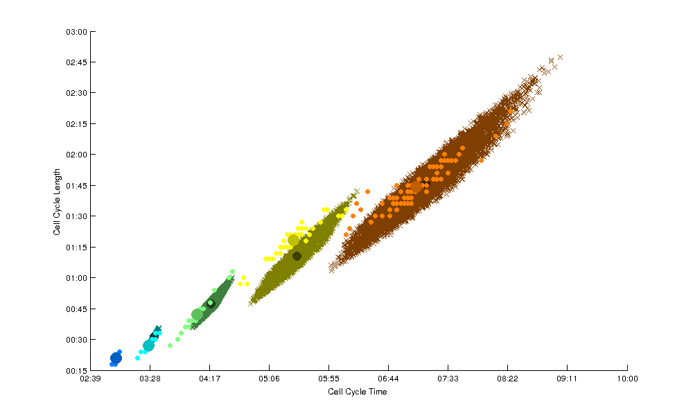
Plot of the cell cycle length \(L_{\mathrm{cc}}\) as a function of the cell cycle time \(T_{\mathrm{cc}}\) for the simulated embryonic development with the best set of parameters for the geometric progression rule. This phenotype has also the best fitness of this study (\(r_0 = 1.5\), \(w_r = 0.4\)).
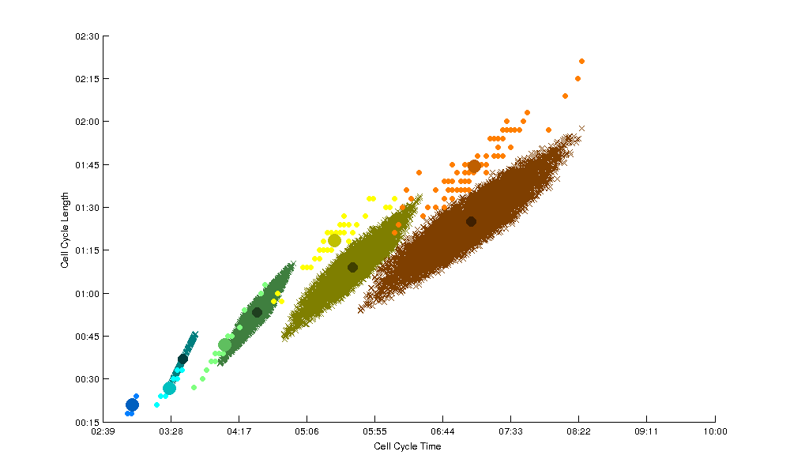
Plot of the cell cycle length \(L_{\mathrm{cc}}\) as a function of the cell cycle time \(T_{\mathrm{cc}}\) for the simulated cells generated with the best set of parameters for the arithmetic progression rule. This phenotype corresponds to the following parameters: \(d_0 = 14\,\mathrm{min}\), \(w_d = 18\,\mathrm{min}\).
8.2.3. Discussion
Although the best fitness is realized by the geometric progression, the differences between the real and the simulated phenotypes derived from the two rules are rather close. These values would become more clearly distinct with a larger number of cycles, but this would not be very meaningful biologically, as the regulation of cell proliferation is expected to diversify at later stages and become dependent on cell location and/or lineage.
The best fitness for the arithmetic progression rule does not perform well for the mean time of each cell generation (Fig. bottom left small plot). Thus the overall performance could have been different, i.e. resulting in a slight advantage for the geometric progression model, if the mean objective functions had been assigned a higher weight than the standard deviation functions in the global fitness expression \(F_{\mathrm{cc}}\).
Interestingly, the hypothesis of a geometric progression was proposed by Kane. However, this author hypothesized a progression function of 1/V, meaning a common ratio of 2, assuming that at each cell division the cell volume is divided by 2 until the end of gastrulation. Kane's experimental data was not consistent with a common ratio of 2, however, and our best fitness suggests a common ratio of 1.5 instead. If the global cell volume conservation hypothesis was not correct, we could reconcile the two studies and calculate the expected volume evolution.
To account for the desynchronization of cell divisions, the common ratio and common difference for the geometric and arithmetic progressions were assumed to obey uniform distributions. This was an ad hoc choice and the possibility that other distributions would provide better fitness should also be explored. In addition, we simplified the system by assuming the first 9 cycles synchronous. Although this might be considered a reasonable approximation, in fact consistent with our data since our 8 cells divided almost synchronously at cycle 9, this might also hide other important features of the system. The point is that our model is probably well suited to analyze the overall desynchronization dynamics, and decide whether different desynchronization regimes occur throughout the first 14 or 16 cell cycles or whether, on the contrary, there is unique regime and the same type of distribution is suitable to evaluate the dispersion of division times along the lineage. The measurements provided by Olivier et al., which indicate that asynchrony starts at cycle 2 and increases through successive cycles might be used to test this hypothesis.
8.3. Shaping the Zebrafish Blastula
In this third case study, our objective is to elucidate the biological mechanisms at the basis of cell-cell and cell-yolk interactions that drive the shaping process of the zebrafish blastula. As shown in previous studies , by the 16-cell stage, the 4 central cells tend to divide more orthogonally to the yolk sphere's tangential plane, leading to a two-layer blastoderm. Through successive divisions, the blastoderm acquires an increasing height on top of the yolk until the high stage, at which point it seems to start flattening, eventually giving rise to the so-called sphere stage (Fig. ).
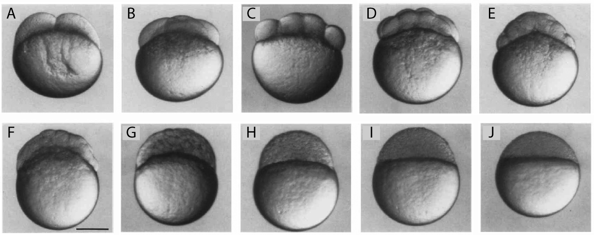
Cleavage and blastula period. A-F: Cleavage period. G-J: Blastula period. All face views except for B, which shows the embryo twisted about the animal-vegetal axis, roughly 45 degrees from the face view. A: 2-cell stage (0.75 h). B: 4-cell stage (1 h). C. 8-cell stage (1.25 h). D: 16-cell stage (1.5 h). E: 32-cell stage (1.75 h). F. 64-cell stage (2 h). G: 256-cell stage (2.5 h). H: high stage (3.3 h). I. transition between the high and oblong stages (3.5 h). J. transition between the oblong and sphere stages (3.8 h). Scale bar in F.: 250 \(\mu\)m. Image and caption adapted from Kimmel et al. (1995)
8.3.1. Hypotheses and Model
We hypothesize that until the early blastula stages (starting at the high stage), blastoderm shaping essentially arises from cell proliferation, the orientations of cell division, and cell-cell and cell-yolk attraction/repulsion forces with negligible intrinsic cell motility. We examined and discussed cell proliferation at the cleavage and blastula stages in the previous case study (Section 8.2). Cell division orientation has also been quantified in the literature : at first orthogonal to each other, division planes appear to become more and more randomly oriented. However, we expect stronger biomechanical constraints on the blastoderm surface to correlate with a more biased orientation pattern. Division orientation in the outmost cell layer of the blastoderm is what distinguishes the EVL (the enveloping layer differentiating at the surface of the embryo to form an epithelium) from inner cell lineages. The EVL starts differentiating as early as the 64-cell stage and becomes a closed compartment at the sphere stage (4 hpf) . Between cell cycle 9 (256 to 512-cell stage) and cell cycle 10 (512 to 1K-stage), cell divisions at the blastoderm-yolk interface also lead to the formation of the yolk syncytial layer (YSL) .
In our model, blastula shaping results from the mechanical interactions between all the particles types involved in the processes described above. We distinguish here four different types of particles (Fig. ):
1. The first category consists of the deep cells (DC, red circles in the 2D schema) whose interactions are driven by the generic rules described in Chapter 3.
2. Then, the yolk particles are separated into two categories: the yolk interior particles (YI, pale yellow triangles), and
3. the yolk membrane particles (YM, yellow squares), which form an viscoelastic sac surrounding YI. Interactions among these two types of yolk particles were described in the first case study (Section 8.1).
4. A new type of particle is introduced here: the EVL cell particles (blue crosses), which constitute the outmost layer of the blastoderm.
Following the template of the passive adhesion table \(\mathscr{P} = \{w^{\mathrm{adh}}_{\mathcal{TT'}}\}\) of Section 5.2.3, mechanical interactions among particles are specified here for each pair of particle types (Fig. B). Note, however, that the present table is not composed purely of adhesion coefficients but rather
interaction types, which might involved slightly different potentials and forces than the foundational model explained in Chapter 3. With the present goal of defining a relevant parameter space for the blastula shaping study, we will explain in the subsections below the four pairwise interaction types that have not been described yet (gray boxes in the table): YM-DC, EVL-DC, EVL-YM, and EVL-EVL. Note that two pairs of types do not correspond to any interaction as their cells are physically separated and never come into contact: YI-DC and EVL-YI. Thus the table contains a total of eight different interaction types.
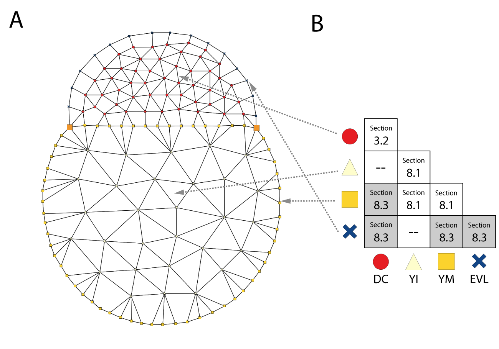
Complete abstract schema of the different particle types involved in the modeled embryo and their interactions. Red circles represent the deep cells (DC), yellow squares the yolk membrane (YM) particles, pale yellow triangles the yolk interior (YI) particles, and blue crosses the EVL cells. A: The two bigger orange squares represent YM particles that are labeled margin as the EVL is attached to the yolk in this position. B: Table of interactions by particles types. Each box indicates the section of the manuscript where a description of the interaction is available. Some interactions are not specified (--).
Cleavage events and EVL formation in the model
The orientation of the first 4 cycles is constrained in the plane tangential to the yolk at the yolk-blastoderm interface (Fig , axes \(A_1\) and \(A_2\)), leading to a 16-cell stage embryo with a single cell layer at the yolk surface (Movie ). Moreover, during the first divisions of the cleavage period, cytoplasmic material is transferred from the yolk cell to the deep cells (see Fig. ). We model this phenomenon by increasing the deep cells' radii at each division until cell cycle 7 (not shown in Fig. ; would correspond to letter H). The DC growth ratio is calculated to obtain at that cycle an embryonic volume 50 percent larger than the volume of the zygote cell.
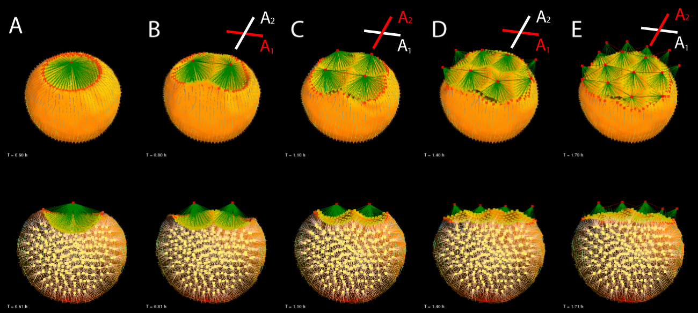
Division orientation in the model from cycle 1 to cycle 4. DC particles are represented by red cubes, YI in yellow, marginal YM in dark orange. Only the YM located above the margin are shown, the rest of the yolk membrane is represented by an orange surface. Top row: external view of the simulated embryo. The orthogonal axes \(A_1\) and \(A_2\) specify the axes of the division, which alternate during the first 4 cycles (red indicates the last axis). Bottom row: sagittal section of the 3D embryo rendering. A: zygote stage. B: 2-cell stage. C: 4-cell stage. D: 8-cell stage. E: 16-cell stage. A dynamical rendering is available in Movie . Division orientation in the model. For caption, see Fig. .
The 5th division (would-be Fig. F) is oriented along the animal-vegetal axis, denoted here \(A_{\mathrm{AV}}\), forming two superposed layers of 16 cells. From there on, two populations co-exist in the model: the external layer of the blastoderm and the deep cell population lying between this external layer and the yolk. To avoid multiplying the terminology we shall call EVL the external layer, even though, strictly speaking, it has not quite differentiated into a proper EVL yet. At the 32-cell stage, the proto-EVL comprises 28 cells and the DC population comprises 4 cells. During the next 6 cell cycles, and up to cell cycle 10, each division in the EVL may contribute cells to the DC population. The successive axes of division are \(A_1\) at cycle 6, \(A_2\) at cycle 7, \(A_{\mathrm{AV}}\) at cycle 8, \(A_1\) at cycle 9, and \(A_{\mathrm{AV}}\) at cycle 10. After that, both daughter cells of each division remain in the EVL layer. Additionally, exceptional radial divisions may also occur at cell cycle 11 (Fig. ), but these will not be taken into account in the model of this case study.
Exceptional (and last) radial cell divisions in the EVL at the cycle 11 (1024 to 2048 cells). These events are not taken into account in the present model, and shown here only as complementary information. Raw image from a live specimen imaged at the oblong stage (3.65 hpf). Insets on the right focus on one particular radial cell division, which spawns a daughter cell into the DC population and keeps the other in the EVL compartment. However, the great majority of cell divisions happening at the same time in the EVL (but not visible here) are oriented tangentially to the embryo surface.
At cell cycle 10, the ratio of the number of EVL cells over the number of DC particles is roughly 1/4. To reflect this, we implemented a rule guiding the contribution of dividing EVL cells to the DC population: for each cell \(i\) belonging to the EVL, if the angle formed by the dipole of daughter cells and the vector normal to the external surface \(\vec{U}_{\mathrm{E}, i}\) (specified in the subsections below) is less than \(\pi/3\), then the inner daughter cell is donated to the DC population. In addition, it may happen that an EVL (resp. DC) particle lies in the DC (resp. EVL) population. As this situation can create an instable dynamics, we implemented a control device based on an alpha shape polyhedron. In 3D, an alpha shape is a collection of triangles covering a finite set of points, formalizing the notion of the shape of an ensemble of 3D points (a standard algorithm can be found in the Computational Geometry Algorithms Library, CGAL). Here, we compute the alpha shape of the cell mass composed of the union of EVL + DC + YM particles (more precisely, the YM cells that are just above the margin) once per cell cycle. If an EVL (resp. DC) particle belongs to the interior (resp. exterior) of that shape, then its type is switched to DC (resp. EVL). In the schematic visualization of Fig. A, this would correspond to a blue cross changing into a red circle or vice-versa.
EVL-EVL particle interactions
Spatial neighborhood
On its path to differentiation and becoming a proper EVL proper, the external layer (which we abusively call EVL here) acquires a specific behavior, distinct from that of the DC particles. EVL cells appear to deform throughout gastrulation, stretch tangentially to the blastoderm surface and flatten in the radial direction. Thus EVL cell shapes depart more and more from the spheroidal approximation. The cell neighborhood principle introduced here will allow the model to manage such a deformation (and will be used in the next case study, Section 8.4).
The definition of the neighborhood between EVL cells is very similar to the one introduced in Section 3.2.2: first, a metric list of neighbors \(\mathcal{N}^{m, \mathrm{E}}_i\) is established; second, a topological filtering is obtained by applying the Gabriel rule (Fig. A and Movie ). The main difference here is that, in order to obtain a denser neighborhood, the diameter of the Gabriel circle is shrunk by a factor \(\chi^{t, \mathrm{E}}\). Thus the modified topological neighborhood of EVL cells \(\mathcal{N}^{t, \mathrm{E}}_i\) is defined by:
where all the cells indexed by \(i\), \(j\) or \(k\) belong to the EVL. If \(\chi^{t, \mathrm{E}} = 1\), this neighborhood is the same as the default set \(\mathcal{N}^t_i\) defined in Section 3.2.2. In the following, the value of the topological factor \(\chi^{t, \mathrm{E}}\) will be set to 0.9.
As EVL cells start deforming during later stages, two radii are also introduced to describe the anisotropy of their shapes: a lateral radius \(R^{\mathrm{lat,E}}_i\) representing the cell radius in the plane of the EVL, and an apico-basal radius \(R^{\mathrm{ab,E}}_i\) representing the cell thickness. Once the topological neighborhood is established, the outward-pointing normal vector \(\vec{U}_{\mathrm{E}, i}\) of every cell \(i\) is calculated by averaging the normal vectors of all the triangles composing the topological neighborhood \(\mathcal{N}^{t, \mathrm{E}}_i\) (which generally is an irregular hexagon, sometimes pentagon, sometimes heptagon; Fig. B).
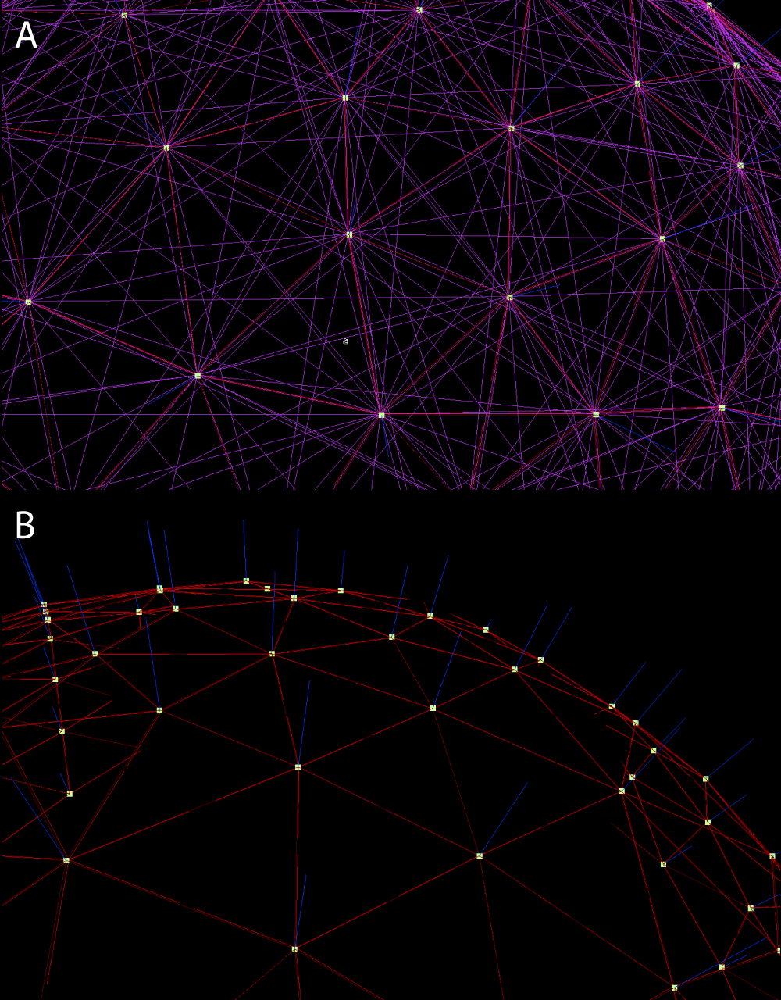
Typical EVL neighborhoods. A: Superposition of the metric neighborhood \(\mathcal{N}^{m, \mathrm{E}}_i\) (purple edges) and topological neighborhood \(\mathcal{N}^{t, \mathrm{E}}_i\) (red edges) on each EVL cell. B: The outward-pointing normal vectors \(\vec{U}_{\mathrm{E}, i}\) (blue lines) are obtained by averaging the normal vectors all the triangles composing the topological neighborhood of cell \(i\). Dynamical view of the EVL neighborhoods. For caption, see Fig. A.
Interaction forces
We model the interaction forces among EVL cells as a pure elastic force:
\(k_{\mathrm{E}}\) is the tangential stiffness constant of the EVL, and \(c^{\mathrm{eq}}_{\mathrm{2D}}\) is the square root of the atomic packing factor in 2D: \(c^{\mathrm{eq}}_{\mathrm{2D}} = (\pi/(2\sqrt{3}))^{1/2} \simeq 0.9523\) (see Section 3.2.3, Fig. ).
DC-EVL particle interactions
Spatial neighborhood
Neighborhoods between deep cells and EVL cells must be defined differently since, in later stages, a single EVL cell may be in contact with a dozen of underlying DC particles. First, the DC-EVL metric neighborhoods of a DC particle \(i\) and an EVL cell \(j\), denoted respectively by \(\mathcal{N}^{m, \mathrm{D:E}}_i\) and \(\mathcal{N}^{m, \mathrm{E:D}}_j\), are obtained by visiting each DC particle and determining its nearest EVL cell (in 3D Euclidean distance). Therefore, the D:E and E:D neighborhood sets are highly asymmetrical, since the former are singletons (of one EVL cell) while the latter may contain dozens of DC particles. Then, given these metric neighborhoods, the topological neighborhoods are obtained as follows: each DC particle \(i\) is revisited and the unique edge it has with its nearest EVL cell \(j\) is maintained if and only if there exists no DC neighbor \(k\) above \(i\) in the direction perpendicular to the EVL. In other words, it means calculating the scalar product between each unitary vector \(\vec{u}_{ik}\) and the normal vector \(\vec{U}_{\mathrm{E}, j}\) and discarding edge \(\overline{ij}\) if any of these products is greater than 0.75 (Fig. ):
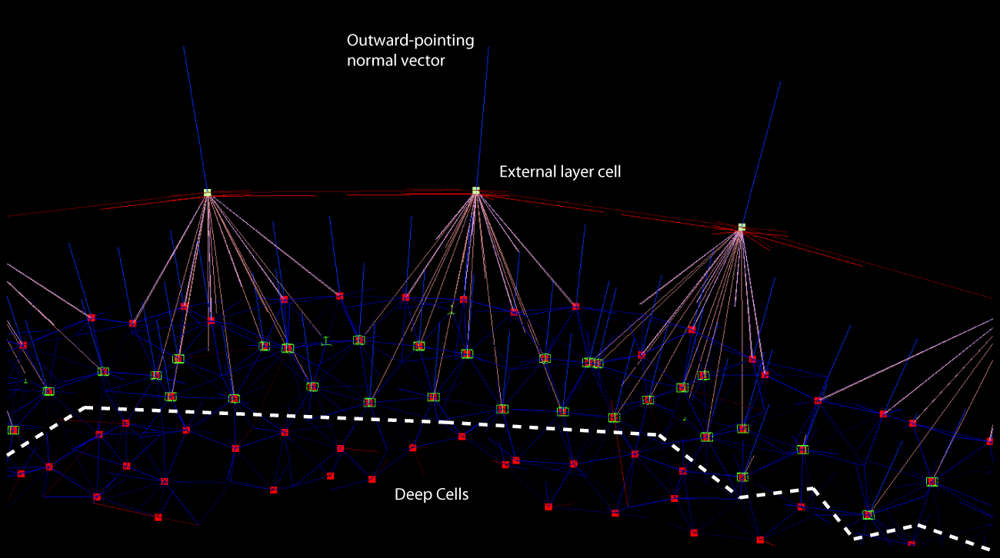
Spatial neighborhood between the EVL cells and the deep cells. This view is a 2D slice (not a 3D perspective) perpendicular to the EVL. It illustrates a late developmental stage to emphasize the size disparity between EVL cells and deep cells. Three EVL cells are displayed with their topological EVL-EVL neighborhood links (red edges). All the red cubes below are the deep cells. Topologically, we distinguish three types of cells: Below the dashed lines are the cells too distant from the EVL. Above the dashed line are the DC particles that belong to the metric neighborhoods of EVL cells \(\mathcal{N}^{m, \mathrm{E:D}}_j\). The cells surrounded by a green box are the ones that are eliminated by the topological rule: each one contains in its regular DC-DC metric neighborhood \(\mathcal{N}^m_i\) a neighbor \(k\) higher above in the normal direction. The top layer of deep cells, are the final topological neighbors of the EVL cells. The light purple lines represent the topological neighborhoods and the beige lines the metric neighborhoods.
Interaction forces
Between a DC particle \(i\) and an EVL particle \(j\), the interaction forces have the same expression as the standard passive attraction/repulsion forces among DC particles (see Section 3.2.3), but oriented here along the EVL normal vector \(\vec{U}_{\mathrm{E}, j}\):
where \(r^{\mathrm{eq}}_{ij}\) and \(r^{\mathrm{max}}_{ij}\) are obtained by using the apico-basal radius \(R^{\mathrm{ab,E}}_j\) instead of \(R_j\) in the case of the EVL cell:
(with the standard coefficients \(c_{\mathrm{eq}}\) and \(c_{\mathrm{max}}\)), and \(A_{ij}\) is formulated as in Section 3.2.3.
EVL-YM particle interactions
Spatial neighborhood
Where the dome-shaped EVL is attached to the yolk, it forms a circular band called the margin. In this case study, every yolk membrane particle belonging to the margin is specially labeled and will be denoted MYM for margin YM (Fig. B). The spatial neighborhoods between MYM and EVL particles are the standard sets defined in Section 3.2.2 (Fig. A). The margin is expected to move down the surface of the yolk during epiboly and gastrulation. The mechanisms determining the conditions for margin motion will be explained in Section 8.5. They are not used in this section, which is limited to the phase that precedes epiboly.
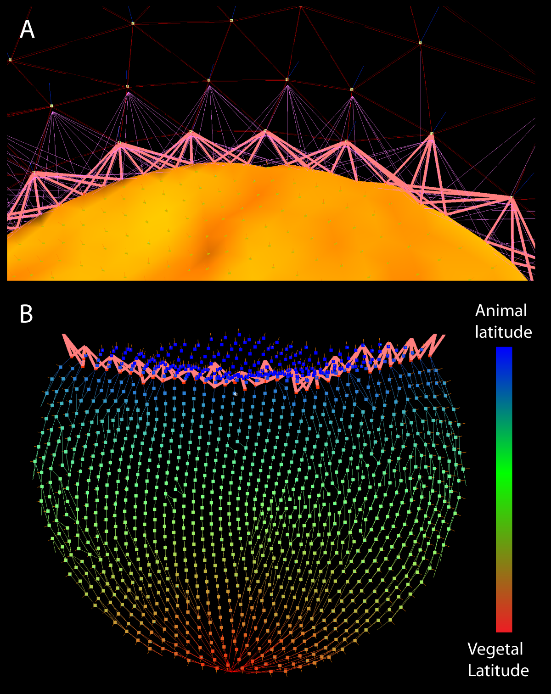
Region of attachment of the EVL to the yolk, or margin. A: Metric (thin purple lines) and topological (fat pink lines) neighborhoods between EVL cells and the MYM particles. B: Concentric yolk marginal circles. From the vegetal pole (bottom) to the animal pole (top) of the yolk, YM particles are classified into 25 concentric latitudes, which are displayed here with a color map from red to blue. The pink lines on top are the same as in A, but the EVL cells are hidden.
Interaction forces
The interaction force between an EVL particle \(j\) and a YM particle \(i\) (which is by definition MYM) will be denoted by the exponent 'ym:E' and is purely elastic:
and the stiffness coefficient is a fraction of the EVL stiffness coefficient: \(k_{\mathrm{ym:E}} = 0.25\,k_{\mathrm{E}}\).
DC-YM particle interactions
Spatial neighborhood
Finally, we define the links between the yolk membrane particles and the deep cells. This neighborhood has to be specified differently throughout the simulation as the DC particles are initially larger than the YM cells but eventually become smaller than them through cell divisions (typically the shift occurs at cell cycle 13). During the first period (DC larger than YM), the neighborhood is fairly simple as for every YM cell the nearest DC particle is selected. No topological filtering is added. During the second period (DC smaller than YM), the neighborhood procedure is the same as in the EVL-DC interactions. For this, we define an outward-pointing YM normal vector \(\vec{U}_{\mathrm{ym},j}\) similar to the EVL normal vector \(\vec{U}_{\mathrm{E},j}\) and also evaluated at every simulation time step (Fig. ). The topological neighborhood for the DC-YM interface is modeled after the DC-EVL interactions, too, thus for each DC particle \(i\) we have:
Note that the sign and the limit of the scalar product is reversed as the YM normal vector \(\vec{U}_{\mathrm{ym}, j}\) is now pointing toward the cells. To simplify, we will denote by \(\mathcal{N}^{\mathrm{D:ym}}_i\) and \(\mathcal{N}^{\mathrm{ym:D}}_j\) these neighborhoods, whether they are of the metric type (first phase) or topological type (second phase).
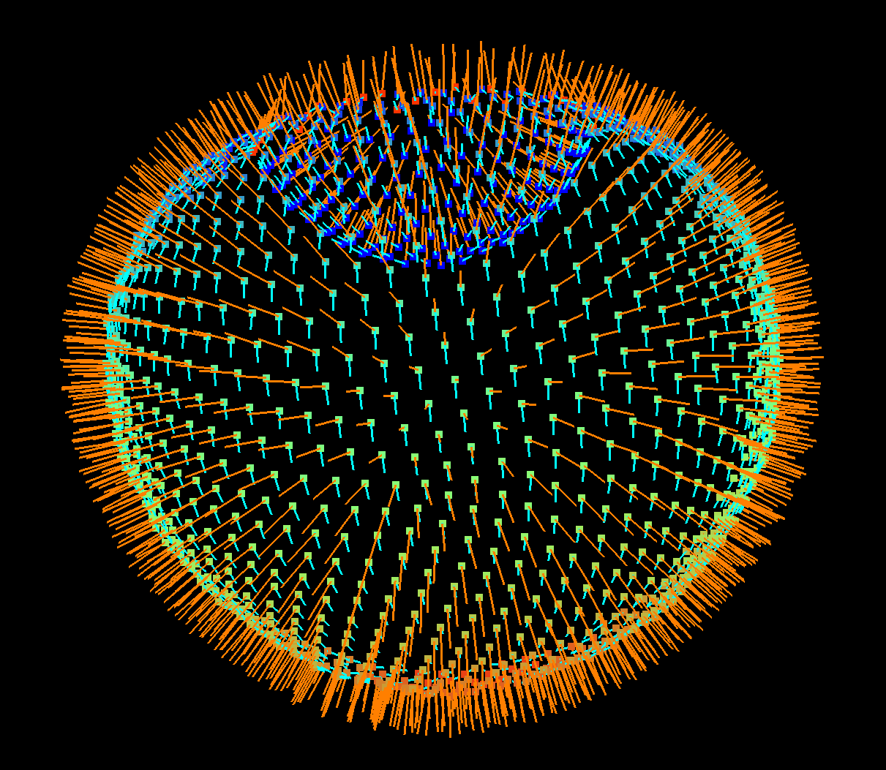
Yolk membrane particles' normal and tangential vectors. At each time step, each YM particle \(j\) updates its outward-pointing normal vector \(\vec{U}_{\mathrm{ym},j}\) (orange lines). It also updates a tangential vegetal-pole-oriented vector denoted by \(\vec{U}^{\parallel}_{\mathrm{ym},j}\) (blue lines), which will be used later on, in the fifth case study (Section 8.5).
Interaction forces
The interaction forces exerted between YM and DC particles are of the standard passive attraction-repulsion type, formulated in a way similar to DC-EVL, but using the unitary edge vectors \(\vec{u}_{ij}\):
where \(r^{\mathrm{eq}}_{ij}\) and \(r^{\mathrm{max}}_{ij}\) are obtained by using the constant radius \(R_{\mathrm{ym}}\) (defined in Section 8.1.1) instead of \(R_j\) in the case of the YM cell:
(with the standard coefficients \(c_{\mathrm{eq}}\) and \(c_{\mathrm{max}}\)), and \(A_{ij}\) is formulated as in Section 3.2.3.
Parameter space for the biomechanical properties of the blastula
We hypothesize that from the 8-cell stage until the high stage, the cell-cell adhesion coefficient \(w_{\mathrm{adh}}\), the cell-yolk adhesion coefficient \(w^{\mathrm{ym:D}}_{\mathrm{adh}}\) and the EVL stiffness coefficient \(k_{\mathrm{E}}\) are the major parameters underlying blastoderm shaping within a single dynamical regime. By exploring the parameter space defined by these three parameters, we expect to find the appropriate conditions for a realistic simulation of this phenomenon that matches the quantitative data obtained from live imaging. We examine this question in the next section.
8.3.2. Simulation, Parameter Space and Validation
Prior to a more systematic exploration of the 3D parameter space defined by the triplet \((w_{\mathrm{adh}}, w^{\mathrm{ym:D}}_{\mathrm{adh}}, k_{\mathrm{E}})\), we carried out a first confrontation of the simulated and reconstructed data based on a first set of parameters that was hand-picked to produce a blastoderm width and height roughly fitting the observations shown in the introduction of Section 8.3, Fig. . We implemented a simultaneous visualization of simulated data and live data from (Movie ). Three data sets from that paper, with IDs 081014h, 080917h and 081024h, correspond to live imaging of zebrafish embryos throughout the first 10 cell divisions with THG signal as shown in Fig. and SHG signal revealing mitotic spindles. In addition to the reconstructed cell lineage for each of these data sets, the paper proposes a prototypic embryo calculated from 6 different specimens by averaging cell dipole lengths at the time of cell division, and cell division orientations.
Superposition of nuclear centers from experimental and simulated data. The experimental data (green centers) is from the dataset ID 081014h of .
We designed two measures to support the fitness function:
Measure 1 is based on the calculation of 3D alpha shapes. At each time step, we compute the 3D alpha shape corresponding to the set of embryo cell centers.
Measure 2 is based on the calculation of 2D alpha shapes. These are achieved by a rotational projection of the particle set around the animal-vegetal (AV) axis, each cell being assigned a position on the half-plane (Fig. ). This operation provided measurements easier to analyze than the 3D alpha shape.
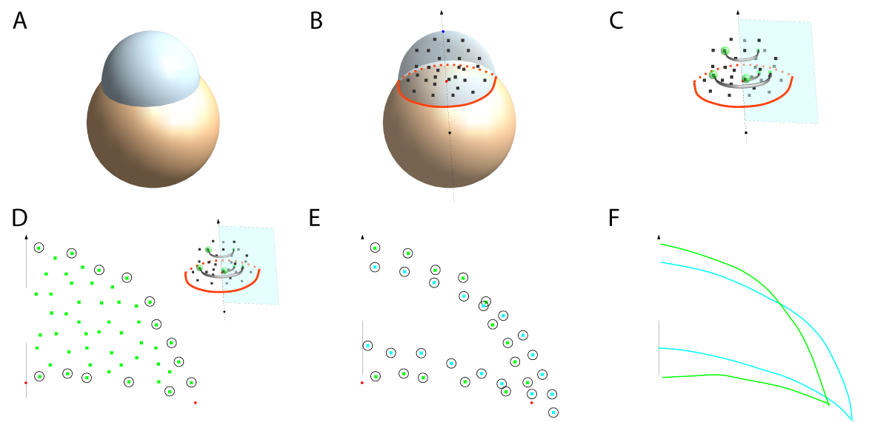
A 2D alpha shape strategy for assessing the embryo shape evolution. A: schematic view of the embryo, with the blastoderm area in blue and the yolk in beige. B: The vertical arrow indicates the animal-vegetal (AV) axis, the red line delineates the blastoderm margin, i.e. the interface between the yolk, the blastoderm and the environment. C: Each cell position is projected on a half-plane by rotation around the AV axis. D: A 2D alpha shape yields the positions of the cells at the blastoderm surface, characterizing the contour of the embryo. E: Two different 2D shapes from two embryos are superimposed. F: The discrete shapes are interpolated via analytical functions.
A possible measurement to characterize the embryo shape and then compare different embryos is to infer the blastoderm contours, in order to both obtain its outer surface and its inner surface in contact with the yolk. Each curve can be described with a limited number of geometric parameters, and we can then predict the shape changes through the evolution of these parameters. This strategy is relevant to characterize both the evolution of the embryo's shape and the shape differences between two embryos at the same stage.
Fitness Function
We now propose one fitness function for each type of measure:
Fitness 1 is calculated by counting the number of cells from the simulated data set that lie outside the alpha shape of the experimental data set, and vice versa, then adding these two numbers. The best scenario naturally corresponds to a zero sum, i.e. no outliers on either side.
Fitness 2 is calculated by the adding the differences between the geometric parameters describing the outer and inner fitting curves of the blastoderm shape.
The proposed measures and fitness are being currently implemented and tested. We do not have results to show yet.
8.3.3. Discussion
Alternatively to the two measures proposed, one could also think of a third one: We should be able to obtain from the BioEmergences reconstruction workflow the algorithmic segmentation of the outer and inner surfaces of the blastoderm from 3D+time imaging of live embryos, either by THG or by 2PEF of fluorescently stained cell membranes. This strategy should provide the best approximation (validated by eye inspection) of the blastoderm shape.
When it is finished, we expect from this study an optimal shape of the blastoderm that will be used as an initial condition for assessing the properties underlying further development (i.e. doming and epiboly).
We also expect some indication about the homogeneity of the process. In other words, we should be able to propose whether the blastoderm shape evolution is adequately described by a single set of parameters, or whether it goes through different transient phases, possibly indicating changes at a more microscopic level in terms of cell adhesion, cell tension, cell intrinsic motility, cell yolk interaction, and external layer differentiation into EVL.
Further exploration of the blastula biomechanics will be proposed through the study of cadherin mutants or morphants. During the blastula period, the cdh1 morphant, with impaired cadherin-1 expression, both at the cell-cell interface and the cell-yolk interface, have an early lethal phenotype. This phenotype is typically an early blastula shaping defect and we briefly discuss here how our model would allow us to account for the disruption of the blastoderm as early as the 4-cell stage under perturbed cell-cell and cell-yolk adhesion (Fig. ). We hypothesize that such a phenotype cannot be obtained if cell-cell adhesion is homogeneously decreased in the mutant. We rather propose to account for the mutant phenotype to implement an heterogeneous field of adhesion coefficients \(w_{\mathrm{adh}}\) and \(w^{\mathrm{ym:D}}_{\mathrm{adh}}\) and we expect to observe similarities with the live phenotypes described by Babb et al. .
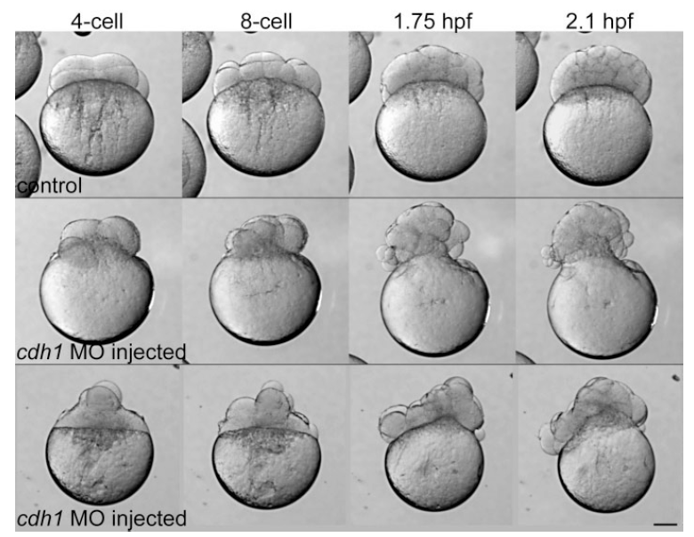
Early cleavage patterns and compaction are disrupted in injected embryos. Zebrafish embryos were injected with control morpholino oligonucleotide (MO), or cdh1 MO, and monitored by time-lapse microscopy. In control embryos (top panel), cleavage planes were regular, blastomeres were approximately equal in size, and cells were strongly adherent and formed a compact mass atop the yolk cell. In cdh1 MO-injected embryos (bottom two panels), the orientation of cleavage planes between blastomeres was irregular, cell size was unequal, adhesion between blastomeres was reduced, and the embryos did not compact normally. hpf: hours post-fertilization. Scale bar 100 \(\mu\)m. Image and caption from
8.4. Cell Behaviors in the Enveloping Cell Layer Compartment
The enveloping cell layer (EVL), which differentiates during the blastula stages, has long been hypothesized to be an extra embryonic compartment. Recent studies rather suggest a striking parallel between the EVL and mammal epidermis . The EVL reinforces its epithelial properties through differentiation steps. EVL biomechnical properties are expected to be essential for further gastrulation steps, during which the EVL is hypothesized to stand increasing tension, undergo limited positional rearrangements , and increase the apical and basal surfaces greatly (see Fig. for an illustration of EVL cells' increase in Fundulus). Various models and measurement methods of the epithelium have been elaborated during the past years (see Section 2.1.4). However, most studies concerned active monolayered epithelia, supposedly performing intrinsic active cell behaviors. In contrast, the zebrafish EVL is supposed to passively react to external stress applied at the level of the margin. In this case study, we explore the specificities of the zebrafish EVL in terms of cell rearrangement and propose a mechanical principle for the regulation of cell proliferation.
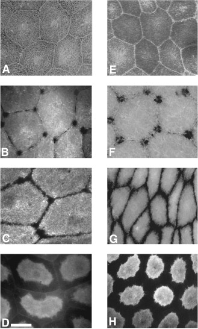
Regional membrane turnover within the apical membranes of Fundulus enveloping layer cells. Pairs of photographs showing the temporal progression of membrane turnover (seen as loss of fluorescence) of EVL cells labeled with fluorescent lectin (A-D) and lipid (E-H). Embryos stained with fluorescent lectin initially show a uniform pattern of fluorescence (A). Six hours later, apical membrane turnover has removed the fluorescent markers from regions where three or more cells come in contact. This loss of fluorescence continues, and by 18 hr (C) after staining, lectin turnover has spread from the cellular contact points along the cell margins. By 36 hr after lectin staining, fluorescence is restricted to a central domain (D). This same pattern of membrane turnover is seen when embryos are labeled with fluorescent lipid: (E) uniform staining at Time = 0 hr; (F) loss of fluorescence at cellular contact points 12 hr after staining; (G) formation of a nonfluorescent peripheral domain 29 hr after staining; and (H) lipid turnover 42 hr after staining creates a peripheral band that extends 10-12 \(\mu\)m inward from cell boundaries. Scale bar, 30 \(\mu\)m. Image and caption from Fink and Cooper, 1996
8.4.1. Hypotheses and Model
Our implementation of the EVL formation is detailed in the previous case study (see Section 8.3.1). In our model, all the blastoderm cells divide synchronously for the first 10 cell divisions. From the 11\(^{th}\) cell cycle, while the deep cells' cycle slows down and desynchronizes in a geometrical fashion (see second case study, Section 8.2), EVL cells have a radically different behavior. We hypothesize that the cell cycle is not determined by an internal clock anymore, but rather by the action of an external tangential tension force exerted on the EVL cells. The division is controlled by the size of the cells, which is itself a function of the mechanical forces exerted on them. In this study, the overall external forces exerted on the EVL are stretching forces applied at the level of the margin, where the EVL cells are attached to the yolk. We assume that these stretching forces might be triggered by the action of the deep cells. The latter mechanism is studied in the next case study (Section 8.5), which focuses on the same time period, i.e. epiboly phase 1. Here, the external stretch is considered given and will not be detailed.
External pressure
We model the external tangential tension exerted over an EVL cell \(i\) as a pressure \(P^{\mathrm{E}}_i\), which will be generally negative to express a tension but can also be positive in the case of a compression. It is calculated by adding the amplitudes of the forces exerted on the various facets of \(i\) by its neighboring EVL cells \(j\) and dividing by the number of facets:
where \(n_i = \mathrm{card}(\mathcal{N}^{t, \mathrm{E}}_i)\) is the number of EVL neighbors of cell \(i\). We recall that the EVL-EVL interaction force \(\vec{F}^{\mathrm{E}}_{ij}\) was modeled as a pure elastic force in the previous case study (Section 8.3.1):
\(k_{\mathrm{E}}\) is the tangential stiffness constant of the EVL, and \(c^{\mathrm{eq}}_{\mathrm{2D}}\) is the square root of the atomic packing factor in 2D: \(c^{\mathrm{eq}}_{\mathrm{2D}} = (\pi/(2\sqrt{3}))^{1/2} \simeq 0.9523\) (see also Section 3.2.3, Fig. ). Therefore, putting everything together, the pressure reads:
EVL cells are modeled as deformed cylindrical-shaped particles, i.e. they are described by a lateral radius \(R^{\mathrm{lat,E}}_i\) and an apicobasal half-height \(R^{\mathrm{ab,E}}_i\), also called radius for simplicity here. Since we hypothesize that the volume of an EVL cell is conserved between two divisions, these two radii are related by \(R^{\mathrm{ab,E}}_i (R^{\mathrm{lat,E}}_i)^2 = \mathrm{cst}\). Thus we will employ the expression cellular growth in the EVL to refer to an augmentation of the lateral radius only—concurrently with a corresponding decrease of the apicobasal radius.
The growth rate of the EVL cells' lateral radius \(R^{\mathrm{lat,E}}_i\) is expressed as follows:
where \(\theta^{-}_{\mathrm{E}}\) (resp. \(\theta^{+}_{\mathrm{E}}\)) is a negative (resp. positive) pressure threshold, and \(\gamma_{\mathrm{E}}\) is the growth ratio. In this study, the EVL cells are never compressed by their neighborhood, so the influence of the positive pressure will not be explored. The value of its threshold is set to 1.
Divisions of the EVL cells
In this model, EVL cells divide after the 11\(^{th}\) cell cycle if their lateral radius exceeds a limit radius denoted by \(R^{\mathrm{lat,E}}_{\mathrm{lim}}\). We calculate this limit radius via a coefficient \(c^{\mathrm{lat,E}}_{\mathrm{lim}}\) linking it to the lateral radius of the EVL cells after cycle 11, denoted by \(R^{\mathrm{lat,E}}_{\mathrm{g11}}\):
The orientation of the axis of cell division is picked randomly in the EVL tangential plane. The division is considered symmetrical, i.e. the two daughter cells have an equal lateral radius, and since their surface area is roughly equal to half of their mother's, we get: \(R^{\mathrm{E}}_{\mathrm{daughter}} = R^{\mathrm{E}}_{\mathrm{mother}} / \sqrt2\).
The parameter space for the EVL cells behavior
In summary, the parameter space is 3-dimensional and comprises:
the limit radius coefficient \(c^{\mathrm{lat,E}}_{\mathrm{lim}}\)
the EVL cellular growth ratio \(\gamma_{\mathrm{E}}\)
the negative pressure threshold \(\theta^{-}_{\mathrm{E}}\)
8.4.2. Simulation, Parameter Space and Validation
Characterizing the epithelial structure has become a popular topic in the biological systems modeling community (see Section 3.2.4). To our knowledge, however, this type of study has not been realized yet for the zebrafish EVL, most certainly due to a lack of quantitative data. Thanks to the work of our team on the BioEmergences platform (described in Section 7.1), we now possess a quantitative temporal evolution of cell neighborhoods in the animal pole region of the EVL during phase 1 epiboly (Fig. ).
Reconstruction of EVL neighborhoods from live imaging
The live specimen used in this study is a wild-type embryo injected with mCherry/H2B and egfp-ras RNAs and imaged with a Leica SP5 upright microscope MLSM (see Section 7.1.1). First, the cell lineage was automatically reconstructed through the BioEmergences workflow (see Section 7.1.2). The processed data goes from 3h48min to 5h43min (hpf), i.e. from the onset of epiboly to the germ-ring stage. Then, for each time step \(t\), a subpopulation \(\mathcal{E}_t\) of the EVL cells was corrected manually, both in the positions of the nuclei's approximate centers and in the cell tracking (yellow cubes in Fig. A and Movie ). 26 mitoses occurred in the selected cell population.
In addition to the cell lineage, a reconstruction of the cells' neighborhood edges was also performed. A first automated step was realized via the Delaunay triangulation algorithm (pink lines in Fig. A). Then, the neighborhood edges between EVL cells belonging to the subpopulation \(\mathcal{E}_t\) of the swarm were manually corrected and validated with the Mov-It software (yellow/green area). The task was facilitated by highlighting the membrane signal with a simple technique: a convex hull of the embryo shape was calculated at each of the 100 reconstructed time steps so that the volume rendering of the membrane channel raw data was hidden inside the hull, leaving a clear view of the external part of the signal (the convex hull is the blue surface, the yellow signal gives the position and shape of the EVL cells' membrane). In the following, we denote by \(\mathcal{N}^{l, \mathrm{E}}(t)\) the corrected neighborhood of the live specimen linking the centers of population \(\mathcal{E}_t\) at the imaging times step \(t=0...100\).
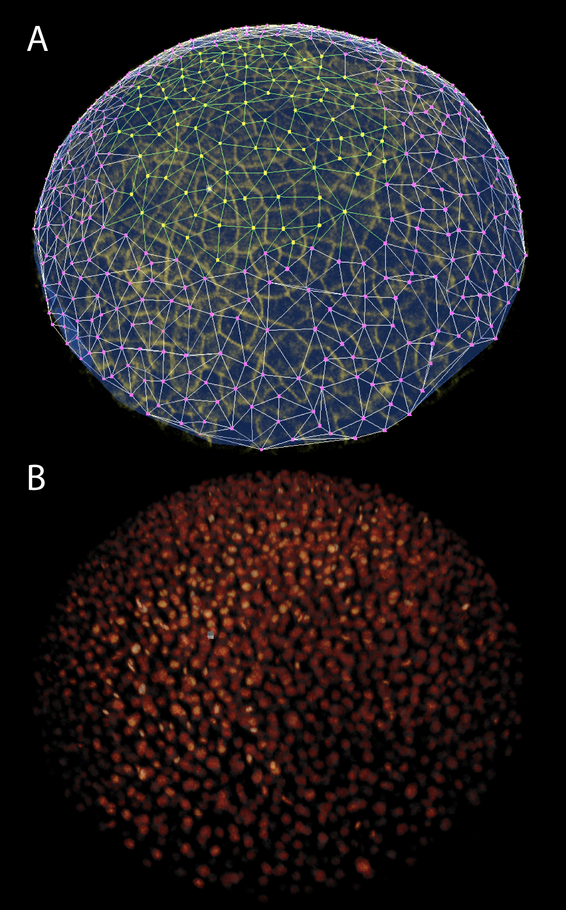
Reconstruction of the EVL from 3D+time imaging. Both images belong to the same dataset 070418a and have been generated by the Mov-It software. A. Superposition of the convex hull (blue surface) calculated from the swarm of cell centers, the volume rendering of the cell membrane channel (yellow signal), the cell positions (cubes) and the cell neighborhood edges (lines connecting the cubes). The manual validation and correction of the cell positions, cell tracking and cell neighborhoods of the yellow/green population were corrected by Adeline Boyreau, the pink population corresponds to the automated reconstruction. B: Volume rendering of the nucleus channel.Dynamical evolution of the enveloping layer neighborhood from the high stage-oblong stage transition to the germ-ring stage. See Fig. for caption.
Population-wide measures
The measures performed on the live specimen belongs to two categories, as presented in Escudero et al. :
geometrical measures based on the apical cell surface \(S^l_i(t)\) of EVL cell \(i\) at imaging time step \(t\) (Fig. ).
topological measures based on the number of neighborhood edges \(n^l_i(t)\), also called degree, of EVL cell \(i\) at time step \(t\) (Fig. ).
The shape of the apical cell surface is approximated by a disc whose radius is the average half-length of the neighborhood edges \(l_{ij}(t)\) over neighbors \(j\) in \(\mathcal{N}^{l, \mathrm{E}}_i (t)\), thus:
One way to characterize the temporal evolution of the EVL is to define the average apical cell surface at time \(t\) over the subpopulation \(\mathcal{E}_t\) of manually corrected cells (Fig. A):
A third classical topological measure is frequency distribution \(D^l_k, k \in \left [ 3..9 \right ]\) of the neighborhood degrees (i.e. the number of cells that have a given degree \(k\)) over the population \(\mathcal{E}\) and the period of 100 time steps. It is plotted as a histogram in Fig. .
Mitosis-related measures
In addition to the population-wide measures, we introduce local measures of the average apical surface \(S^l_{\mathrm{mit}}(t')\) and neighborhood degree \(n^l_{\mathrm{mit}}(t')\) before and after each of the 26 mitoses occurring in the manually corrected tissue. The timeline is rescaled so that the mitoses are occurring at \(t' = 0\), and the rescaled time values \(t'\) are comprised between \(-50\) and \(50\). We denote by \(\mathcal{M}^l\) the set of mitoses in the live specimen. Each mitosis \(m\in \mathcal{M}^l\) is described by a pair of values: \(m=(t_m, i_m)\), where \(t_m\) is the time step of the mitosis, and \(i_m\) the id of the mitotic cell. As a mitosis produces two daughter cells, each mitosis is counted twice, once for each daughter id (i.e. the cardinal of the set \(\mathrm{M}^l\) is 52). The measure of the neighborhood degree \(n^l_{\mathrm{mit}}(t')\) around a mitotic cell \(i\) is obtained by aligning the cells' degrees \(n^l_i(t)\) at the time of each mitosis (Fig. ) and dividing them by the number \(\#\) of cells for which there exists a measure at \(t'\) (Fig. B and B):
where \(\#(t')\) is the cardinal of the set of measures (surface or degree) that are defined at the time step \(t'\). For example, Fig. B, \(\#(0) = 10\), \(\#(-20) = 8\), and \(\#(50) = 6\).
The average surface around mitoses \(S^l_{\mathrm{mit}}(t')\) is expressed in a similar fashion, but integrates another factor in its expression in order to deal with the heterogeneity of cell surfaces observed in the data. We divide the surface of a mitotic cell by its new surface just after mitosis:
We expect in further work to extend this type of study to a small cohort of specimens. The one image here with the shortest possible time step (67s) until the 6-somite stage showed photobleaching of the mCherry by the end of gastrulation and some cell death in the brain by 24 hpf. Although we only use here the first hours of the time lapse, we cannot exclude that the features of this specimen are far from being prototypical. In any case, we observe that the variability of the EVL cells' surface is high (large error bars in Fig. A). This is somehow surprising if we assume that the cell cycles remained synchronous for the first 10 divisions (see second case study, Section 8.2) and given that the thickness of the EVL cells seems to be homogeneous at a given time step. In this context, and if the cell volume does not increase, the data would be best explained by asymmetric divisions. The increase in EVL cell surface is expected and accelerates during epiboly phase 1 (Fig. A).
The measure of the cells' average apical surface around mitosis \(S^l_{\mathrm{mit}}(t')\) shows a higher slope before division than after it (Fig. B). This could indicate that smaller cells are less sensitive to the overall pressure in the tissue, and thus do not expand their surface as fast as the larger ones. We also observe that, surprisingly, the average surface of the daughter cells just after division is more than half the surface of the mother cell (approx. 60 percent). It could be due to a bias in the spheroid approximation of the measure, or to a thinning of the cell as early as the time of cytokinesis.
The average evolution of the degree (i.e. number of neighbors of a given cell) through time remains constant (Fig. A). However, we observe that the average degree of the dividing cells diminishes after mitosis, which is expected, but does not recover its pre-mitosis value during the hour following the division (Fig. B). Such a behavior indicates that the tissue undergoes little rearrangement during the phase 1 epiboly. We compared the characteristics of the zebrafish EVL to other animal epithelia from the literature (Fig. B). The histogram of the distribution of degree for the zebrafish EVL is radically different from the narrower histogram provided by so-called proliferating epithelia. In Gibson et al. , the Drosophila wing disc, the Hydra epidermis and the Xenopus tail epidermis are shown to have similar distribution of degrees. This type of distribution is typical of epithelia that are shaped by proliferation only. In the chick embryo primitive streak, where cells are intrinsically motile, the degree distribution is much broader and favors lower numbers of neighbors (see chick streak in Fig. B) . The zebrafish EVL distribution seems closer to the chick streak case.
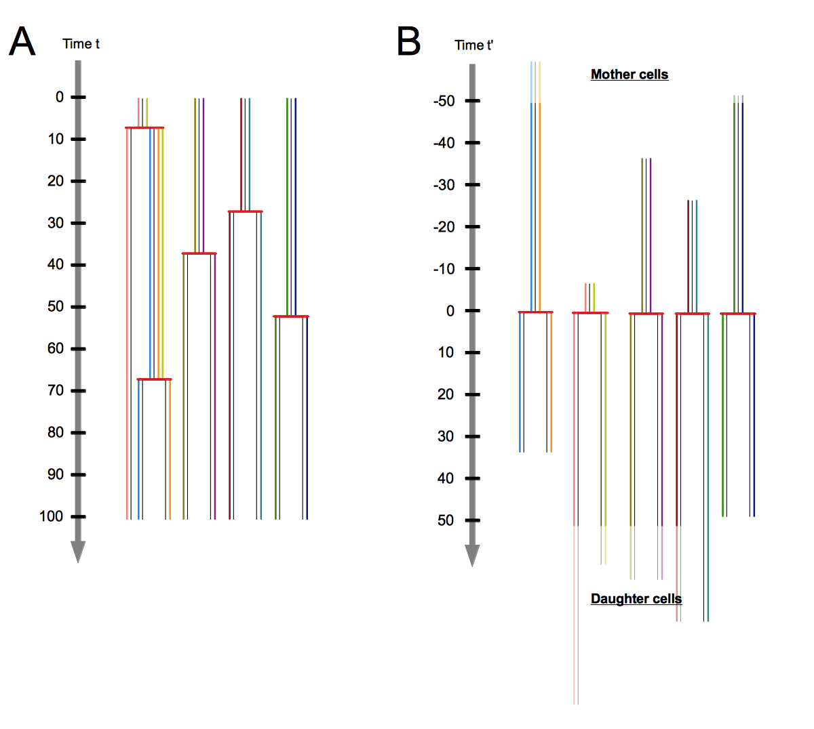
Temporal alignment of cell divisions. The abstract examples of mitosis displayed to illustrate the strategy do not belong to the real measured population \(\mathcal{M}^l\). The colors identify individual mitoses \(m\) of \(\mathcal{M}^l\) in both panels. A: 5 mitoses occurring at various time steps. B: The same mitoses translated in the new timeline \(t'\). The measured quantities represented by the colored lines are available for each time step \(t'\). The quantities are considered if they belong to the \(\left[ -50, 50 \right]\) interval. Beyond this interval, the discarded values are covered by a white overlay.
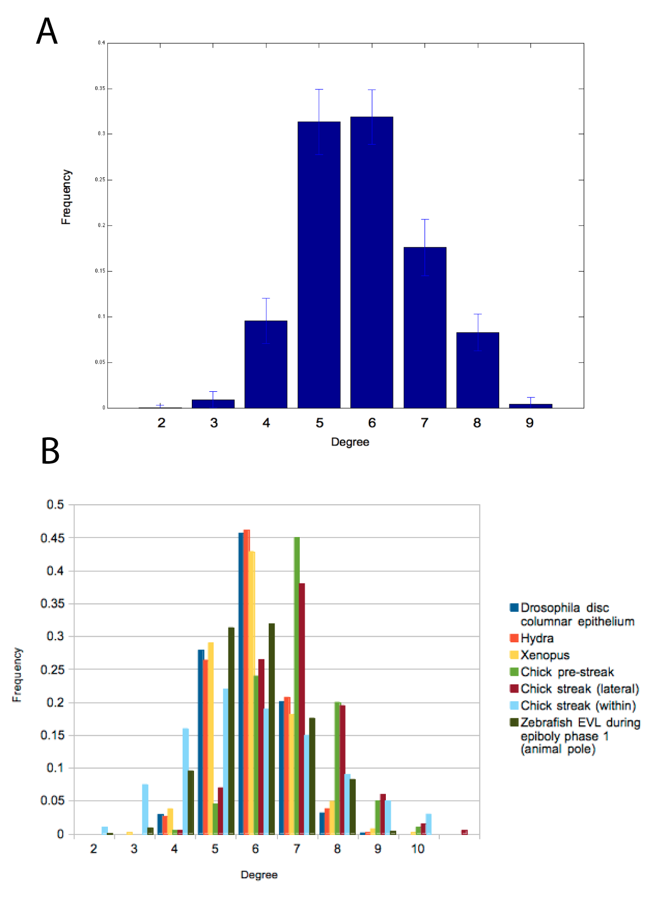
Histogram of the number of neighbors in the whole population \(\mathcal{E}\) and comparison with other tissues. A: In ordinate, the frequencies of the degree \(D^l_k\) observed in the corrected population \(\mathcal{E}\). Error bars indicate the standard deviation for each degree's frequency. Measures calculated and plotted by Paul Villoutreix. B: Comparison of the distributions of degrees in the Drosophila wing disc (blue, 2,172 cells), the Hydra epidermis (orange, 602 cells), the Xenopus tail epidermis (yellow, 1,051 cells), the chick pre-streak (green, 351 cells), the chick lateral streak (brown, 634 cells), the chick streak (pale blue, 613 cells), and the zebrafish enveloping layer during epiboly phase 1 (dark green, 5725). Data for Drosophila, Hydra and Xenopus are extracted from Gibson et al. , data for the chick epithelia are extracted from Sandersius et al. .
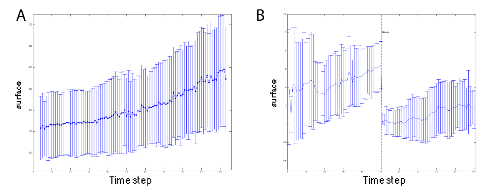
Evolution of the EVL cells' average surface. A: Temporal evolution of the average cell surface \(\lt\!S^l(t)\!\gt\) in the population \(\mathcal{E}\). The measure starts at time step 4 (3h52min) and ends at time step 103 (5h43min). Consecutive time steps are separated by 1min07s. An increase of 50 percent is measured during this period. B: Temporal evolution of the average cell surface \(S^l_{\mathrm{mit}}(t')\) around mitosis. All 52 mitoses are superposed as if they were occurring simultaneously at time step \(t'=0\). The cells' apical surfaces are normalized so that the surface of the cell measured immediately after mitosis is equal to 1. The average and standard deviation at each time step before and after mitosis are calculated and plotted. Both measures were calculated and plotted by Paul Villoutreix.
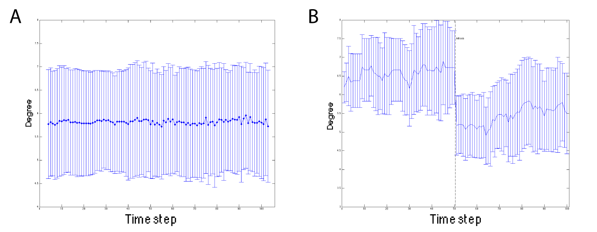
Evolution of the EVL cells' average degree. A: Temporal evolution of the averaged cell degree \(\lt\!n^l(t)\!\gt\) in the population \(\mathcal{E}\). The measure starts at the time step 4 (3h52min) and ends at the time step 103 (5h43min). Consecutive time steps are separated by 1min07s. The average degree remains roughly constant during this period. B: Temporal evolution of the average cell degree \(n^l_{\mathrm{mit}}(t')\) around mitosis. All 52 mitoses are superposed as if they were occurring simultaneously at time step \(t'=0\). The average and standard deviation at each time step before and after mitosis are calculated and plotted. Both measures were calculated and plotted by Paul Villoutreix.
Simulated specimens
The simulated embryos are modeled in a simulated time corresponding to the period measured in the live embryos: from 3h52min to 5h43min simulated time. The driving mechanism of the epiboly is the protrusive behavior of the deep cells of the blastoderm. This mechanism is explored in detail in the fifth case study, Section 8.5. The measures performed in the live embryo are reproduced for each simulated embryo. Simulated embryos are denoted by the \(s\) superscript instead of the \(l\) superscript. Whereas the simulation time step is shorter than the live specimen imaging time step (6 simulated seconds per time step versus 67 seconds), the measures were realized with the same time interval as the measures in the live specimen.
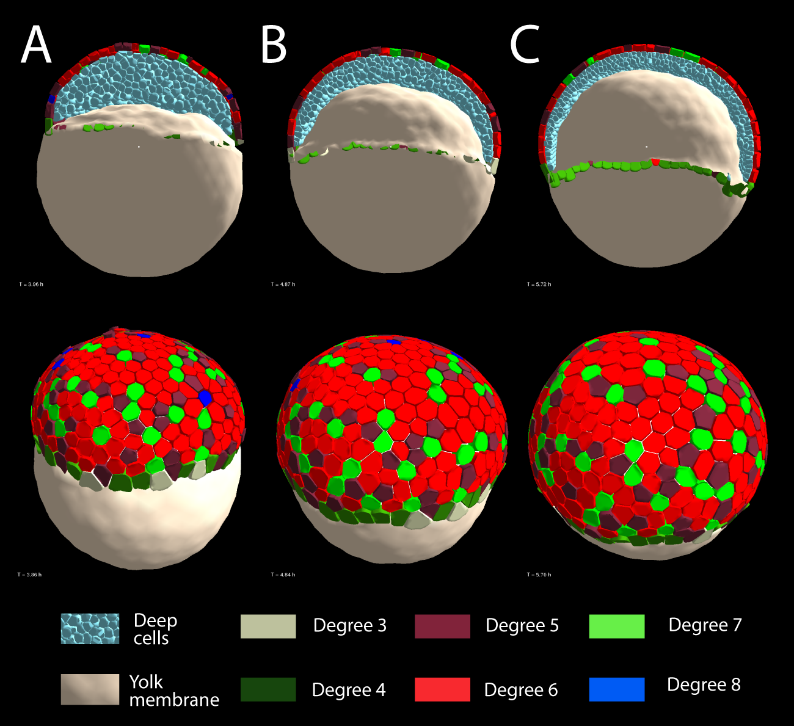
The simulated embryo's EVL during epiboly phase 1. All deep cells are colored in blue. The color of the EVL cells indicates the degree of the cell (see legend). First row: the embryo is cut along the bilateral symmetry plane, the yolk is empty as no yolk interior particles are represented. Second row: external view of the embryo. A: onset of epiboly (approx. 3.9h simulated time). B: 30-percent epiboly stage (approx. 4.85h simulated time). C: 50-percent epiboly, the internalization is not modeled here (approx. 5.7h simulated time). The movie from which these images are extracted is Movie .
The simulated embryo's EVL during epiboly phase 1. see Fig. for caption.
Fitness Function
Similarly to the other case studies, we define one objective subfunction per measure mentioned above, in order to compare the live and simulated embryos:
These five objective subfunctions are merged into a global fitness function \(F\) through a weighted sum method. As in the second case study, Section 8.2, we renormalize each objective function by its maximum value:
We explored the 3D parameter space specified in 8.4.1. Parameters include the limit radius coefficient \(c^{\mathrm{lat,E}}_{\mathrm{lim}}\), the EVL growth ratio \(\gamma_{\mathrm{E}}\), and the pressure threshold \(\theta^{-}_{\mathrm{E}}\). The parameter space was regularly sampled over the following range with the following cardinalities (Fig. ):
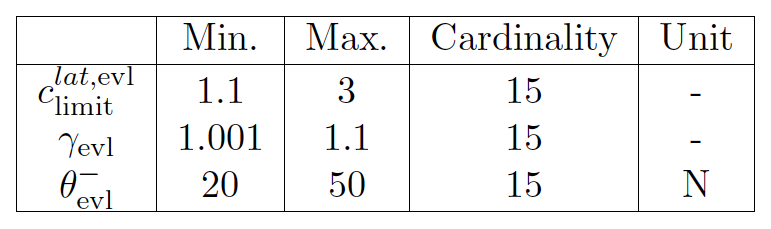
Range, cardinalities and units of the three parameters explored in this study.
A general trend of this exploration of the parameter space is the limited influence of the EVL growth ratio \(\gamma_{\mathrm{E}}\) parameter. All the fitness landscapes show little variation along the vertical axis (Figs. -). In reaction to a given external pressure, a faster expansion of the EVL cell surface will lower the overall EVL pressure faster, making it pass below the pressure threshold \(\theta^{-}_{\mathrm{E}}\). This threshold is the key parameter controlling the resistance of the simulated embryo to external pressure. As expected, the limit radius coefficient \(c^{\mathrm{lat,E}}_{\mathrm{lim}}\) influences the average surface evolution function \(F_S\) (Fig. ). If the limit radius coefficient value is too small, the EVL cells divide a lot, leading to numerical instabilities when the pressure threshold is high (red potholes in Figs. -). If the limit radius coefficient value is too high, the EVL cells become larger than in the live specimen, and above a value of about 2.5, the EVL cells will not divide during the epiboly phase 1 period (Fig. ). The size of the EVL cells is also controlled by the pressure threshold which limits the expansion the EVL cells. The best value for the limit EVL cell radius before a division is about 1.45 times the radius at the previous cell generation (in this case the 11\(^{th}\) one).
The topological measures highlight a limited performance of the model in terms of the characterization of the number of neighboring cells. The average degree is not sensitive to variations in parameter space (Figs. , ). A closer examination of the simulated distribution of degrees shows a stable narrow distribution similar to the one observed by Gibson et al. in proliferating epithelia (histograms from simulations not shown). This low sensitivity is due to the strong constraint imposed by the neighborhood algorithm (see Section 8.3) and the spheroidal particle approximation.
The global fitness landscape offers a more contrasted evaluation of the parameter space with a domain of best fitness delimited by a value of \(c^{\mathrm{lat,E}}_{\mathrm{lim}}\) around 1.4 and a value of \(\theta^{-}_{\mathrm{E}}\) around 40 (Fig. ).
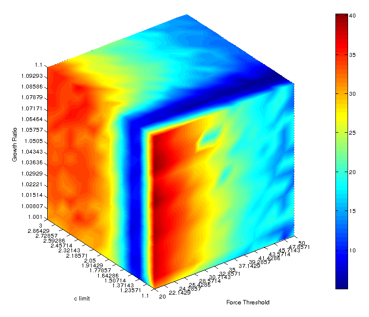
3D plot of the average surface evolution function \(F_S\). The vertical axis indicates the EVL growth ratio \(\gamma_{\mathrm{E}}\), the depth axis indicates the limit radius coefficient \(c^{\mathrm{lat,E}}_{\mathrm{lim}}\) and the horizontal axis indicates the pressure threshold \(\theta^{-}_{\mathrm{E}}\).
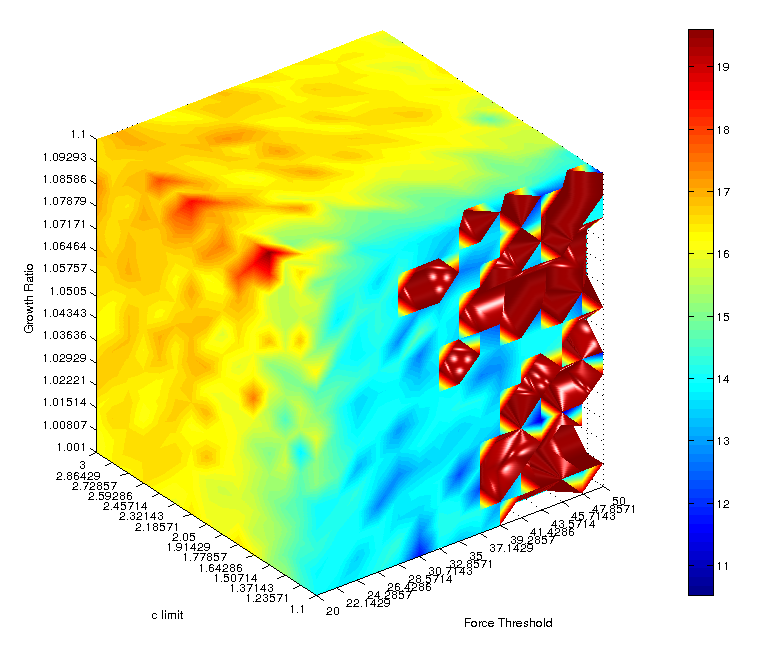
3D plot of the average degree evolution function \(F_n\). The red potholes visible on the lower limit radius coefficient \(c^{\mathrm{lat,E}}_{\mathrm{lim}}\) face of the cube are due to simulation divergence. See Fig. for details.
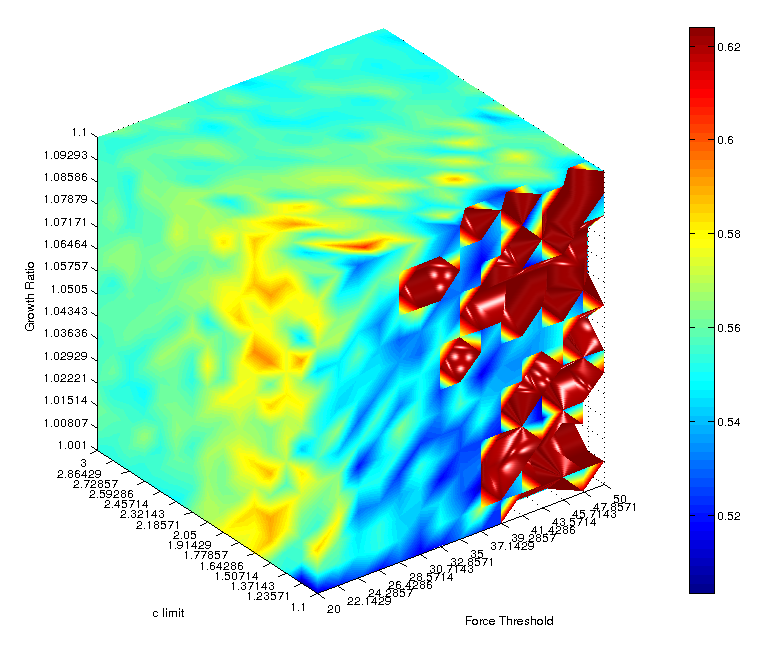
3D plot of the average degree distribution function \(F_D\). See Fig. for details.
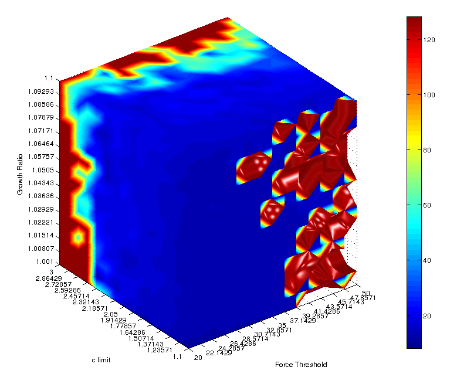
3D plot of the average mitotic surface function \(F_{S,\mathrm{mit}}\). See Fig. for details.
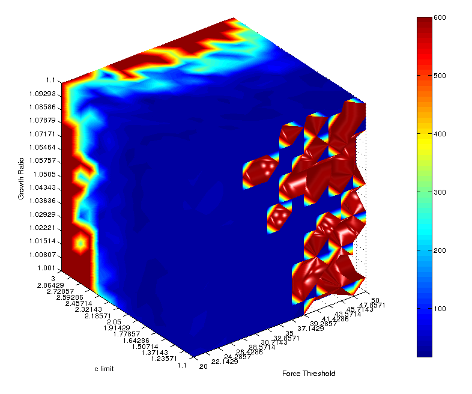
3D plot of the average mitotic degree function \(F_{n,\mathrm{mit}}\). See Fig. for details.
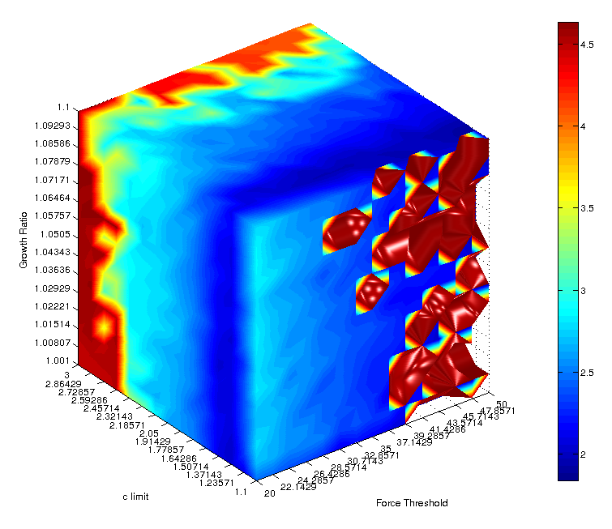
3D plot of the global fitness function \(F\). See Fig. for details.
8.4.3. Discussion
The model of the enveloping layer compartment presented here offers the possibility to test the mechanical properties of the zebrafish EVL. To our knowledge, it had never been studied based on quantitative measurements as presented above. Compared with the literature, our real measures (Fig. B) tend to show that the EVL epithelium obeys a behavioral law different from the ones described so far for this kind of tissue, with a distribution of the number of neighbors situated in an intermediate position between the proliferating epithelia and the motile epithelia. The evaluation of the model provided mild results: the simulation performed well on the geometrical side, but poorly on the topological side. We hypothesize that to improve these results, the abstract level of the cell shape characterization, i.e. a flat spheroid described by a single particle, may require a refinement of the neighboring rules to account for the topological properties of the EVL. However, the overall mechanical properties of the tissue can indeed lead to the epibolic motion, as detailed in the next case study. The mechanism by which the margin constraint induces the pressure in the EVL is also presented in the next section.
As already mentioned, this study should be extended to a small cohort of individuals. Further investigation should also apply the strategy to the EVL at later stages, until the closure of the tail bud, and if possible on the entire EVL. We could compartmentalize the EVL in different subregions to test whether the mechanical constraints produce different behaviors according to the spatial position. A possible compartmentalization could be an animal-vegetal slicing of the EVL in concentric rings (see Movie ).
8.5. Intercalation Patterns
Epiboly is characterized by a flattening of the deep cell mass and its spreading over the yolk cell toward the vegetal pole (Fig. ). Two successive episodes may be distinguished, as described in Chapter 6: a first epibolic phase from the high stage to the shield stage, with the intermediate oblong and sphere stages, and a second epibolic phase starting at the time of the internalization of the hypoblast. The second phase will be studied in the last case study, about Gastrulation (Section 8.6). We focus here on the first phase of epiboly and the cell movements involved in it. From the onset of epiboly, deep cells start to intercalate radially, cells from the depth of the blastoderm moving toward the blastoderm surface. Although intrinsic deep cell behaviors are supposed to be responsible for the deformation of the embryo at these stages, we cannot exclude an active participation of the yolk syncytial layer (YSL) or the newly differentiated EVL to the epiboly movement either. In this case study, we use macroscopic measures characterizing the doming phenomenon and microscopic measures characterizing the intercalation patterns, to show that the intrinsic behavior of deep cells is sufficient to trigger upward yolk bulging (doming motion) and downward margin progression toward the yolk equatorial latitude. In this context, we will also evaluate how the YSN margin and the enveloping layer (EVL) tangential stiffness modulate the deep cells' driving force.
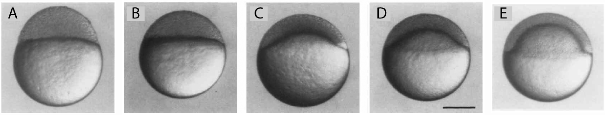
Early gastrula period. Face views. A: transition between the high and oblong stages (3.5 h). B. transition between the oblong and sphere stages (3.8 h). C: Dome stage (4.3 h). D: 30-percent epiboly stage (4.7 h). E: 50-percent epiboly stage (5.25 h). Scale bar: 250 \(\mu\)m. Image and caption adapted from Kimmel et al. (1995)
8.5.1. Hypotheses and Model
The initial state of the simulation in this case study is the same as in the previous one (Section 8.4.1). The simulation starts at a simulation time equivalent to 3h30 hpf (just after the high stage ) and stops at a simulation time equivalent to 5h42 hpf (germ ring stage ). The deep cells lie on top of the yolk, stuck between the YSL and the EVL (Fig. A).
Passive margin sliding
We envision five possible, but non-exclusive scenarii explaining how the margin moves toward the vegetal pole: (i) the internal YSL (iYSL, see Fig. ) actively spreads over the yolk (in its cortical region), carrying both the deep cells and the EVL margin with it, (ii) the EVL actively spreads over the blastoderm, carrying the margin with it, (iii) the margin is pulled downward by an active mechanism in the external YSL (eYSL), (iv) some active mechanism inside the yolk triggers the convex bulge inside the blastoderm area, and (v) the deep cells actively intercalate and their collective behavior induces a pressure at the marginal region, pushing the resisting margin toward the vegetal pole.
Scenarii (i) and (iii) would require some active mechanism in the microtubules' network linking the yolk syncytial nuclei (YSN), either by pushing from the iYSL or pulling from the vegetal eYSL. Disruption of the microtubules with nocodazole at the sphere stage is not sufficient, however, to stop the epibolic motion . Scenario (ii) would require an active flattening of the EVL apico-basal thickness and conjugated extension of its lateral surface. This would imply that at the margin, the EVL would move toward the yolk equatorial latitude ahead of the deep cells, but this is not what we observe in our imaging data (Fig. and Movie ). The inside of the yolk has also not been described to contain a well structured cytoskeleton. This penalizes the possibility envisioned by scenario (iv) of an active mechanism occurring in this domain.
Wild type zebrafish embryo imaged live from the oblong stage to 30-percent epiboly. We observe here a slice passing approximately through the center and the animal pole of the embryo. A: oblong stage. B: transition between oblong and sphere stage. C: sphere stage. D: transition between sphere and dome stage. E: dome stage. F: transition from dome to 30-percent epiboly stage. Dataset ID 071222bF. The movie from which these images are extracted is available in Wild type zebrafish embryo from the 32-cell stage to the 75-percent epiboly stage. We observe a slice passing approximatively through the center and the animal pole of the embryo. The period of interest is from the high stage (\(T=34\)) to the germ ring stage (\(T=110\)). We notice empty gaps that appear under the EVL during the phase 1 epibolic motion, suggesting that the deep cells would intercalate more toward the yolk than toward the EVL. Dataset ID 071222bF.
All the experiments described in the literature on pre-internalization embryos indicate that phase 1 epiboly is a robust process, with probably redundant underlying mechanisms. However, the only scenario which does not lead to contrasted arguments is scenario (v), thus our goal will be to show in the simulation context that the active intercalation of the deep cells is sufficient to drive the epiboly during phase 1. This scenario requires a mechanism that will convert the push exerted by the deep cells over the margin into a sliding movement of the margin toward the vegetal pole. We describe here how this mechanism is modeled.
Force model
The marginal deep cells are stuck in the corner formed by the YSL and the EVL. We expect that the margin will slide toward the vegetal pole if the norm of the tangential force exerted by the deep cells (DC) on the marginal yolk membrane particles (MYM), denoted by \(\vec{F}^{\mathrm{m:D}, \parallel}_{ij}\), is larger than a given resistance threshold \(\theta_{\mathrm{m}, \parallel}\) (Fig. C). We call this force the pushing force as it expresses the localized quantity of force exerted by a DC particle \(j\) over an MYM particle \(i\). Its equation reads:
where the repulsion coefficient \(w^{\mathrm{ym:D}}_{\mathrm{rep}}\) is the same as the one controlling the repulsion at the YM-DC interface (see Section 8.3.1), \(A_{ij}\) is the surface of contact described in Section 3.2.2, \(r^{\parallel}_{ij}\) is the scalar product of the relative position vector \(r_{ij}\vec{u}_{ij}\) and the tangential vector \( - \vec{U}^{\parallel}_{\mathrm{ym},i}\) of the MYM particle \(i\) (Fig. C,D), and \(r^{\mathrm{eq}, \parallel}_{ij} = c_{\mathrm{eq}} (R_i + R_{\mathrm{ym}}) \). Note that only the repulsive part of the force (\(r \lt r^{\mathrm{eq}}\)) has an non-zero formulation because we do not consider here the reverse situation of marginal deep cells going back toward the animal pole of the yolk and pulling the margin with them. Naturally, that case could also be implemented if needed (for example to account for a mutant phenotype).
Mechanism controlling the passive sliding of the blastoderm and EVL margin toward the vegetal pole. A: Sagittal section of the simulated embryo at the onset of epiboly. B: Sagittal section at 30 percent epiboly. C: Zoom on the marginal region of the embryo at 30 percent epiboly. When a deep cell (DC, red) \(j\) is in contact (green lines) with a margin yolk membrane (MYM, orange) particle \(i\), a pushing force \(F^{\mathrm{m:D}, \parallel}_{ij}\) is calculated to estimate the mechanical pressure exerted by exerted by \(j\) on the margin at the cellular level. If this force exceeds a certain resistance threshold \(\theta_{\mathrm{m}, \parallel}\), the MYM particle looses its marginal properties, and transmits it to one or several regular YM particle(s) at a more vegetal latitude. C: Schema describing the pushing force exerted by DC particle \(j\) over MYM cell \(i\). The pushing force is non-zero only if the distance between the positions of \(j\) and \(i\) projected on the tangential vector \(\vec{U}^{\parallel}_{\mathrm{ym},i}\) (not shown) is smaller than the equilibrium distance \(r^{\mathrm{eq}, \parallel}_{ij} = c_{\mathrm{eq}} (R_i + R_{\mathrm{ym}}) \). The orange and red circles highlight the radii of cells \(j\) and \(i\) respectively.
Chemical model
The objective of this study is to show that radial intercalation is sufficient to drive the epiboly phase 1. At the cellular level, the mechanism attributed to the cells is the bipolar protrusion. We propose two similar means of specifying radial polarization fields through the Waddingtonian Timeline Specification described in Section 4.2:
The first polarization field is specified by the ligand-based polarization mode '(a)' based on a diffusive ligand \(Q_1\) secreted by the EVL. For this lgiand, the YSL acts as a sink (Fig. , top embryo).
The second polarization field is obtained by reversing the sink and source roles base on another ligand \(Q_2\) (Fig. , bottom embryo).
If the EVL-deep cells and the YSL-deep cells interfaces were exactly parallel during phase 1 epiboly, these two gradients would generate equal polarization fields. This is obviously not the case before 30 percent epiboly (see Movie before \(T=90\)), justifying our choice of two different radial polarization fields. It should be noted that using a ligand-based polarization mode should not be interpreted as any commitment to how a polarization field is generated in the real embryo. For this study, we remain agnostic with respect to the actual physico-chemical polarization mechanisms, and are interested only in the effects that such abstract fields have on cell movements and emerging morphogenetic processes at a more macroscopic level.
Ligand diffusion table \(\mathscr{L}\) for the Intercalation case study. Two gradient fields are established by ligand diffusion across the dome region formed by the deep cells. They contribute to the specification of the axes of the polarization: a ligand \(Q_1\) is secreted by the EVL with secretion rate \(s_1 = 1000\) and absorbed by the yolk membrane particles, more precisely the YSL. Conversely, a ligand \(Q_2\) is secreted by the YSL with rate \(s_2 = 1000\) and absorbed by the EVL.
The polarization fields specified above are very regular, or certainly less fluctuating than would the case biologically. To test the effect of some stochasticity on these fields, we introduced a new binary parameter \(\lambda_r\) controlling the randomness of the polarization field: if \(\lambda_r = 0\), the polarization axes \(\vec{U}_i\) are as specified above; otherwise, if \(\lambda_r = 1\), the polarization field is purely random, i.e. we add an ad hoc rule generating, for each cell \(i\), a random vector \(\vec{U}_{r, i}\) every 15 minutes of the simulation time. For each cell \(i\), the equation of the effective polarization axis \(\vec{U}^{e}_i\) integrating this stochastic factor is:
followed by a renormalization step to keep the polarization vector unitary.
Force-chemical coupling model
Once the polarization field is established, the protrusive behavior of the cells needs to be parametrized. For the sake of simplicity, we represent the whole deep cell population by a single cell type \(\mathcal{T}_{\mathrm{red}}\), and define each cell to exert bipolar protrusion forces over their \(\mathcal{T}_{\mathrm{red}}\) neighbors. Parallel to the two polarization fields, we define two similar protrusion specifications (Fig. ). When the polarization field originates from the diffusion of ligand \(Q_1\) (resp. \(Q_2\)) secreted by the EVL (resp. YSL), protrusions are oriented along the axis \(\vec{U}_1\) (resp. \(\vec{U}_2\)). In both cases, the intensity of the protrusive force \(f^A\) will be one of the explored parameters. We decided not to explore the influence of the passive force coefficients \(w^{\mathrm{adh}}_{\mathcal{T_{\mathrm{red}}T_{\mathrm{red}}}}\) and \(w_{\mathrm{rep}}\), however, as they counterbalance the effect of \(f^A\). In this study, both passive coefficients will be set to 1.
Active protrusion table \(\mathscr{A}\) for the Intercalation case study. A: All the cells belonging to the \(\mathcal{T}_{\mathrm{red}}\) population exert bipolar protrusions over each other along the polarization axis \(\vec{U}_1\) derived from the gradient field of ligand \(Q_1\). B: The same cells can exert another bipolar protrusion along \(\vec{U}_2\) derived from \(Q_2\). In both cases, the intensity of the protrusive force is \(f^A\).
EVL model (imported from previous case study)
Finally, the last factor that we hypothesize to have an influence on the epibolic deformation of the embryo is the tangential tension in the EVL. As examined in the fourth case study (Section 8.4), the overall surface of the EVL clearly increases during epiboly. To reflect this, we have proposed a model of EVL that did not trigger the spreading intrinsically but rather resisted to it. We summarize here the contribution from this preceding case study to the present one.
Our model of cell proliferation and growth is controlled by various parameters: EVL cells surface expand or shrink according to the external pressure exerted by their EVL neighbors. If the cell is compressed, i.e the external pressure is greater than a positive threshold \(\theta^{+}_{\mathrm{E}}\), its lateral radius \(R^{lat, \mathrm{E}}_i\) decreases by a ratio \(\gamma_{\mathrm{E}}\). On the contrary, if the cell is under tension, i.e. the external pressure is smaller than a negative threshold \(\theta^{-}_{\mathrm{E}}\), \(R^{lat, \mathrm{E}}_i\) increases by the same ratio \(\gamma_{\mathrm{E}}\). To control the resistance of the EVL against spreading, we modulate the EVL expansion threshold \(\theta^{-}_{\mathrm{E}}\): if it is close to zero, any external tension will trigger expansion and potentially proliferation of the tissue, and the EVL will not resist spreading. If the absolute value of \(\theta^{-}_{\mathrm{E}}\) is high enough, then the EVL will not expand and proliferate, and it will resist spreading. Between these two extremes, we expect that the EVL will exhibit an intermediate degree of resistance, allowing us to decipher its influence on the whole epibolic motion.
Parameter space for the intercalation pattern in epiboly phase 1
In summary, the parameter space to be explored is 5-dimensional, and comprises:
the type of polarization field: EVL-origin or YSL-origin
the margin resistance \(\theta_{\mathrm{m}, \parallel}\)
the stochasticity of the polarization field controlled by \(\lambda_r\)
the EVL resistance to external tension, controlled by \(\theta^{-}_{\mathrm{E}}\)
the intensity of the protrusion force \(f^A\)
8.5.2. Simulation, Parameter Space and Validation
We envision two types of measures to characterize the epiboly phase 1 motion: macroscopic measures describing the whole embryo deformation, and microscopic measures describing the micro-level patterns of intercalation.
Macroscopic measures: temporal evolution of singular epiboly landmarks
Live specimen
While the in toto reconstruction of the zebrafish early development phenomenology (as described in Chapter 7) is a valuable strategy to decipher the multiscale interactions to contains, a qualitative understanding of the macro-scale deformation of the embryo is best achieved from Karlstrom and Kane's 1996 flipbook of embryogenesis . We derived from this movie a measurement of the macroscopic deformation occurring during epiboly phase 1 (see Movie ). We extracted 12 images from the oblong stage to the 50-percent epiboly stage (Fig. ). We interpret from the analysis of these images that the embryo's animal-vegetal (AV) axis is slightly away from the vertical, and that the timing between successive frames (counted at the top left of each frame, first line) is very irregular. We decided to adjust this timing in hpf units (hours post fertilization) using the table provided in (top left of each frame, second line). We manually annotated the most important landmarks on each image using 6 dots (see explanation in the figure caption).
Macroscopic landmarks of the epibolic deformation from the flipbook specimen. Snapshots of the zebrafish development from the oblong stage to 50 percent epiboly extracted from the movie by Karlstrom and Kane . Colored dots have been manually added to estimate the macroscopic morphological characteristics of the embryo: red dots signal the animal pole of each embryo, green dots the vegetal pole, blue dots the animal-pole limit of the yolk, and triplets of yellow dots delineate the margin, where the left and right dots identify the external position of the margin and the central one correspond to their averaged projection on the AV axis. The time value displayed below the image id is the time in hours post fertilization given by . These timings do not scale linearly with the image ids and have been renormalized.
The macroscopic measures were inferred from the singular landmarks described above and consisted in the temporal evolution of four absolute distances (Fig. , dashed lines):
the embryo height from the vegetal pole to animal pole (red dashed line)
the margin height from the vegetal pole to the central marginal position (green dashed line)
the yolk height from the vegetal pole to the yolk animal pole (blue dashed line)
the margin width from the left to the right marginal positions (yellow dashed line)
These measures provide an absolute macroscopic description of the deformation occurring during phase 1 epiboly. However, in order to compare different embryos, either live or simulated, a normalization of the distances is required. This normalization implies a loss of part of the information. We chose to use the embryo height as a reference for the comparison, leaving three remaining measures:
the normalized margin height \(H^{\mathrm{e}}_{\mathrm{m}}\), obtained by dividing the margin height distance by the embryo height (green solid line): it characterizes the overall covering of the yolk by the cells; this measure will tend to zero as the tail bud closure proceeds./li>
the normalized yolk height \(H^{\mathrm{e}}_{\mathrm{Y}}\), obtained by dividing the yolk height by the embryo height (blue solid line): it characterizes the doming of the blastoderm and the bulging of the yolk
the embryo width to height ratio or sphericity coefficient \(C^{\mathrm{e}}_{\Phi}\), obtained by dividing the margin width by the embryo height (yellow solid line): it characterizes the sphericity of the whole embryo; this value would be equal to one for a spherical embryo, less than one if the embryo is elongated along the AV axis, and more than one if the embryo flattens along the AV axis.
These simple measures allow to distinguish two macroscopic phases of deformation (grey areas in Fig. ): first, the sphere transition deformation, occurring between 3h37min (hpf) and 4h00min (hpf) in the flipbook, and second, the doming deformation, starting 8 min later and going on between 4h08min (hpf) and 5h35min (hpf). During the sphere transition, the absolute height of the embryo decreases, while its sphericity increases rapidly. The flattening at the sphere stage of the yolk cell-blastoderm interface appears moderate, and it is possible that other specimens behave somewhat differently in this respect (as in Fig. C for example). Additional embryos would be useful to refine this measure (and the other measures as well). The doming transition is accompanied by an important move of the blastoderm margin toward the vegetal pole and an even more important relative displacement of the yolk cell's animal pole, while the overall sphericity slowly increases.
Macroscopic measures of the epibolic deformation in the flipbook specimen. The measures defined by the macroscopic landmarks displayed in Fig. are shown. The red line is the plot of the distance between the animal pole (AP) of the embryo and the vegetal pole (VP) of the yolk (embryo height). The green line is the plot of the distance between the projection of the margin on the animal-vegetal (AV) axis and the VP of the yolk (margin height). The blue line is distance between the AP of the yolk and the VP of the yolk (yolk height). The yellow line is the lateral distance between the margin positions (margin diameter). The dashed lines give the absolute distance between landmarks in pixels (left ordinate axis). The continuous lines give the normalized distances (right ordinate axis). The normalization is obtained by dividing each value by the current yolk height (i.e. dashed red line). The abscissa gives the time in hour post fertilization.
Simulated specimen
In contrast to the live measures that were performed on 2D images, the simulated embryo is a 3D structure that requires an adaptation of the automated measurements. All the measures were performed in reference to the AV axis and a point \(\mathbf{M}_{\mathrm{o}}\) in the center of the embryo (we use here upright boldface notation for all 3D point coordinates and vectors). In the simulation, the AV axis unitary vector \(\mathbf{U}_{\mathrm{AV}}\) is specified a priori in the initial conditions (Fig. ). The embryo's center \(\mathbf{M}_{\mathrm{o}}\) is calculated and updated at each simulation time step by averaging the positions of the yolk membrane (ym) and the yolk interior (yi) particle:
where \(\mathbf{X}_{\mathrm{yi},i}\) (resp. \(\mathbf{X}_{\mathrm{ym},i}\)) is the position of the yolk interior (resp. yolk membrane) particle \(i\) and \(N_{\mathrm{yi}}\) (resp. \(N_{\mathrm{ym}})\) is the total number of yolk interior (resp. yolk membrane) particles.
The embryo vegetal pole \(\mathbf{M}^{\mathrm{E}}_{\mathrm{V}}\), embryo animal pole \(\mathbf{M}^{\mathrm{E}}_{\mathrm{A}}\) and yolk animal pole \(\mathbf{M}^{\mathrm{Y}}_{\mathrm{A}}\) are obtained by calculating the scalar product between the AV axis \(\mathbf{U}_{\mathrm{AV}}\) and each ym or EVL particle's relative position with respect to the center, then selecting the position that realizes the maximum (farthest value in the positive direction) or minimum (farthest value in the negative direction) of this product:
where \(\mathcal{S}_{\mathrm{ym}}\) is the set of yolk membrane particles' position and \(\mathcal{S}_{\mathrm{E}}\) is the set of EVL cell particles' position. The projection of the margin on the AV axis \(\mathbf{M}_{\mathrm{m}}\) is obtained by averaging the scalar projection of all margin yolk membrane (MYM) particles' relative positions on the AV axis:
where \(\mathbf{X}_{\mathrm{m},i}\) is the position of the MYM particle \(i\) and \(N_{\mathrm{m}}\) is the number of MYM particles. Finally, the embryo's width \(W\) is twice the average of the radii defined by the distances between the MYM particle positions and their common projection \(\mathbf{M}_{\mathrm{m}}\):
Macroscopic landmarks of the epibolic deformation in simulated specimens. Landmark dots have been manually added for the purpose of the illustration. They represent the macroscopic landmarks automatically calculated by the simulated measurements. The grey line is the animal-vegetal (AV) axis, a priori specified for the initialization. The red dot is the embryo animal pole \(\mathbf{M}^{\mathrm{E}}_{\mathrm{A}}\), the blue dot is the yolk animal pole \(\mathbf{M}^{\mathrm{Y}}_{\mathrm{A}}\), the black dot is the embryo center \(\mathbf{M}_{\mathrm{o}}\), the green dot is the embryo vegetal pole \(\mathbf{M}^{\mathrm{E}}_{\mathrm{V}}\), the orange dot is the margin level \(\mathbf{M}_{\mathrm{m}}\), i.e. the average of all the projections of margin yolk membrane particles (small orange circles) on the AV axis (only a few of these particles are displayed). Note that the position of the yolk animal pole, embryo animal pole and embryo vegetal pole are never exactly aligned on the AV axis as they must coincide with one particle's position. The deep cells are not displayed here, leaving a carved out domain between the yolk cell and the EVL.
Similarly to the live specimen, we define the normalized margin height \(H^{\mathrm{s}}_{\mathrm{m}}\), the normalized yolk height \(H^{\mathrm{s}}_{\mathrm{Y}}\) and the sphericity ratio \(C^{\mathrm{s}}_{\Phi}\) as the following:
The results of these macroscopic measures of epibolic deformation on the simulated embryo are shown in Fig. and Movie .
Macroscopic measures of the epibolic deformation in a simulated specimen. Six snapshots corresponding to different stages of a simulated embryo are displayed along with the temporal evolution of the corresponding macroscopic measures (blue), compared with the flipbook measures (white). Sphericity is represented by the dash-dot lines, normalized yolk height by the solid lines and normalized margin height by the dashed lines. The embryos' positions correspond approximately to the snapshot times in abscissa. The simulated embryo parameters are: ligand source \(Q_2\) on the yolk, \(\theta_{\mathrm{m}, \parallel} = 5.33\), \(\lambda_r = 0\), \(\theta^{-}_{\mathrm{E}} = 56.67\) and \(f^A = 3556\). The movie from which these snapshots are extracted can be viewed in .Simulated embryo during epiboly phase 1. see Fig. for caption.
Our first observations from these preliminary results is that the deep cells' active protrusive behavior seems sufficient to drive the embryo deformation during epiboly phase 1, in the context of the simulation. As it can be seen on Fig. , the temporal evolution of the macroscopic measures fits reasonably well the data extracted from Karlstrom and Kane's flipbook. The main discrepancy with the flipbook is the apparent lack of sphere transition leading to the sphere morphology during the first hour. We do not observe the characteristic phase of increased sphericity concomitant with a statu quo for the normalized yolk and margin heights. In the simulated embryo's trajectory, the early increase of sphericity is always simultaneous with the decrease of at least one of the other macroscopic measures. A possible explanation could be that the initialization of the simulation is not close enough to the real high stage, with a yolk-deep cell interface already presenting a flat shape in the simulation.
After this study of one particular embryo under a fixed set of parameters, we now proceed to a more in-depth exploration of the space parameter.
Fitness function
Aided by the above measures that perform an automated quantitative comparison between live and simulated embryos, we designed three objective subfunctions to evaluate the similarity of the simulated embryos with the flipbook specimen:
\(F_{\mathrm{m}}\), the normalized margin height objective function,
\(F_{\mathrm{Y}}\), the normalized yolk height objective function,
\(F_{\Phi}\), the sphericity objective function.
The three objectives functions have the same expression:
where \(t_1...t_{12}\) are the timings of the 12 images extracted from the flipbook specimen (Fig. ). These three objectives functions are then merged into a global fitness function \(F\) via a simple averaging operation:
In contrast to Section 8.2.2, the contribution of each objective function is added without normalization as these functions are all of the same kind, i.e. differences of normalized measures.
Fitness landscape
We explored the parameter space of the simulation to find the best match with the live measurements. This space is 5D, comprising the source of ligand diffusion (EVL or YSL), the margin resistance \(\theta_{\mathrm{m}, \parallel}\), the stochasticity of the polarization field controlled by \(\lambda_r\), the EVL resistance to external tension controlled by \(\theta^{-}_{\mathrm{E}}\), and the intensity of the protrusion force \(f^A\). The parameter space was regularly sampled over the following range with the following cardinalities (Fig. ):
Range, cardinalities and units of the five parameters explored in this study.
A number of insights could be gained from the fitness landscape analysis. A general trend is that the protrusive force intensity and the randomness coefficient have counterbalancing effects. A higher protrusive force coupled with a higher random factor produces a fitness value similar to a couple of factors with lower values, as indicated by the isolines of Figs. -. The profile of the isolines gives a relationship between both parameters. It appears to be supralinear as counterbalancing an increase of the protrusion force intensity requires an exponential increase of the randomness parameter.
For couples of parameters \((f^A, \lambda_r)\) situated below the isoline passing through the point of coordinates (2000, 0.05), we do not observe any macroscopic epiboly behavior. We may however qualitatively distinguish different microscopic behaviors in this area: for low levels of protrusive force intensity, the lack of epibolic deformation is due to the lack of intercalating behavior at the cellular level. On the contrary, for high levels of protrusive force intensity and randomness, the cells start intercalating inefficiently, with cells sliding on each other in a fluid-like manner, and tissue cohesion is lost (Movie ). This behavior is due to an inequality between the active and passive forces in favor of the protrusive forces. Further study of these mechanisms would require a preliminary calibration between both types of forces to ensure that these behaviors do not occur. In the following, we performed an a posteriori calibration of parameter \(f^A\) at value 3555.
Fitness landscapes as a function of the random parameter \(\lambda_r\) and the protrusive force intensity parameter \(f^A\). Top Left: global fitness function. Top Right: normalized yolk height objective function \(F_{\mathrm{Y}}\). Bottom Left: normalized margin height function \(F_{\mathrm{m}}\). Bottom Right: sphericity objective function \(F_{\Phi}\). On each plot, the random parameter \(\lambda_r\) is shown in abscissa and the protrusive force intensity \(f^A\) in ordinate. The color maps scale between zero and the maximum value of the fitness landscape that they are associated with (to the left).Fitness landscapes as a function of the random parameter \(\lambda_r\) and the protrusive force intensity parameter \(f^A\), with the yolk as a ligand source (value 2). Each of the 9 subplots is equivalent to the landscapes presented in Fig. . From top left to bottom right, the margin resistance \(\theta_{\mathrm{m}, \parallel}\) increases regularly from 1 to 35.666 (the last subplot for value 40 was removed to avoid excessive image reduction). The threshold controlling the EVL resistance \(\theta^{-}_{\mathrm{E}}\) is set to 72. The whole dataset of these fitness landscapes is available here.Fitness landscapes as a function of the random parameter \(\lambda_r\) and the protrusive force intensity parameter \(f^A\), with the EVL as a ligand source (value 1). Except for the source, the parameter space mapped here is the same as in Fig.
Eliminating the \(f^A\) dimension allows us to use the 4D visualization tool introduced in Section 8.1.2: the results can be seen in Figs. -. This tool and the complete fitness datasets are available here for download (MATLAB required). The comparison of the fitness landscapes associated with the two polarization scenarii (sources 1 and 2) points out their similarities and differences, as discussed below.
A general trend is the penalizing effect of the polarization field randomness: all objective functions perform poorly in this domain (top parts of all 3D charts). The only exception concerns the normalized margin height measure \(F_{\mathrm{m}}\), which tempers this effect when conjugated with low EVL resistance to tension \(\theta^{-}_{\mathrm{E}}\), and low margin resistance to deep cells' pressure \(\theta_{\mathrm{m}, \parallel}\) (Fig. ). Observations of the simulated phenotypes in this particular domain (Movie ) show that the relaxed state of the EVL and margin, coupled with the low efficiency of the deep cells' protrusive activity (due to high randomness), produce a slight move of the margin toward the vegetal pole along with a de-flattening of the yolk-deep cells interface.
This observation emphasizes the importance of the embryo's external tension (EVL+Margin) for the shaping of the cellular domain (see third case study, Shaping the Blastula, in Section 8.3). We also observe that in the scenario of the EVL as a ligand source (value 1), the EVL's topology becomes more irregular. A feedback coupling involves the perturbation of the polarization field from the disorganized EVL, disorienting the deep cells, which in turn reinforces the EVL disorganization. Both the normalized yolk height and the sphericity measures perform badly as yolk bulging does not occur.
At the opposite side of the parameter spectrum, i.e. with low polarization randomness \(\lambda_r\) and high EVL and margin resistance, the deep cells' intercalation gains in efficiency but is constrained by the margin lock, preventing them to spread over the yolk. Interestingly, the two polarization scenarii offer alternative behaviors in response to this abnormal condition. In the YSL-based field, the deep cells' intercalation exerts a spreading force that deforms the overlying EVL. This deformation is actually much more important in the EVL-based field, where the epiboly's spreading triggers the blastoderm's wrenching from the yolk surface (Movie ). This pathological behavior is not expected and can be explained by an inadequacy of the intensity of the forces, without the random axis-induced damping. Obviously, both the sphericity and the normalized yolk height measures penalize the EVL-based scenario, compared to the YSL one (Fig. and Fig. , bottom right corner of the cubes).
Another dramatic scenario is obtained if an efficient intercalation (no randomness in the field) is happening together with strong EVL resistance and a weak margin resistance (Movie ). The previous scenario happens again, i.e. the EVL blocks the spreading of the deep cells, except that at some point the margin still receives pressure that makes it move toward the vegetal pole, pulling the yolk membrane toward the animal pole. The accumulating yolk membrane ends up being rolled in a unrealistic fashion, stretching the inner yolk membrane particles, and finally allowing the strongly intercalating deep cells to perforate the yolk membrane, and penetrate into the yolk. As the spatial neighborhood algorithm is not designed to deal with this situation, a flow of deep cells enters the yolk.
The last example of aberrant development was detected by the normalized margin measure, due to its too-vegetal margin position (Fig. , bottom right corner), but both the normalized height and the sphericity measures evaluated the developmental trajectory of the embryo as excellent (Fig. , bottom right corner). This mischaracterization of an abnormal behavior highlights the difficulty to a priori envision the potential behaviors of a simulated model.
3D plot of the normalized margin height objective function \(F_{\mathrm{m}}\). The isosurface represents the best fitness volume (threshold 0.38). The protrusive force intensity \(f^A\) has been set to 3555. The vertical axis indicates the random parameter \(\lambda_r\), the depth axis indicates the threshold controlling the EVL resistance \(\theta^{-}_{\mathrm{E}}\) and the horizontal axis indicates the margin resistance threshold \(\theta_{\mathrm{m}, \parallel}\). This 3D objective function landscape has been rotated, unlike the following ones, to show a better angle of view. The interactive 4D visualization tool is available here for download (MATLAB required)3D plot of the normalized yolk height objective function \(F_{\mathrm{Y}}\). The threshold of the isosurface is set to 0.56. See Fig. for details.3D plot of the sphericity objective function \(F_{\Phi}\). The threshold of the isosurface is set to 1.20. See Fig. for details.3D plot of the global fitness function \(F\). The threshold of the isosurface is set to 0.69. See Fig. for details.
Microscopic measures: temporal evolution of cells local neighborhood
While the above measures give a valuable estimation of the in toto macroscopic behavior, they do not permit to evaluate the micro-scale of cell interactions during the process. The rapid flattening of the deep cells' mass, from 12 cell rows at the sphere stage to about 4 cell rows at the germ ring stage, must involve an intercalation of the cells along the embryo's radial axes. We assessed cell behaviors during epibloly phase 1 by focusing on their radial displacement. By radial displacement, we mean the temporal evolution of the relative position of the cells in the depth of the cell mass. We denote here by \(\mathcal{L}^R_i\) the radial line passing through the center of the embryo \(\mathbf{M}_{\mathrm{o}}\) and a deep cell \(i\) at position \(X_i\). On this line, we denote by \(\rho^{R}_i\)(t) the normalized position of cell \(i\) between the EVL-\(\mathcal{L}^R_i\) intersection point \(X_{i, \mathrm{E}}\) and the YSL-\(\mathcal{L}^R_i\) intersection point \(X_{i, \mathrm{Y}}\) at time \(t\) (Fig. ):
Normalized position of the cells along the radial axis \(\mathcal{L}^R_i\). The measure is applied to the cell \(i\) in green shape with its approximate center as a black dot, at position \(X_i\). It represents the fraction of the height of \(X_i\) on the segment going from \(X_{i, \mathrm{Y}}\) to \(X_{i, \mathrm{E}}\).
With these notations, we now define the microscopic measure \(M^{R}_{i}(t_0, t_n)\) characterizing the normalized radial displacement of a cell \(i\) during a time interval \(\left[ t_{0}..t_{n} \right]\) as the sum of the absolute values of its relative displacements at each time step:
In a minimal rearrangement scenario with a purely increasing (or decreasing) \(\rho^{R}_i\) value, this measure boils down to the difference between the first and last relative radial positions: \(M^{R}_{i}(t_0, t_n) = \rho^{R}_i(t_n) - \rho^{R}_i(t_0)\). However, if cells are moving back and forth radially, then this measure takes on higher values (Fig. ).
Illsutration of the microscopic measure of cell intercalation \(M^{R}_{i}\). Three fictive cell trajectories in normalized radial displacement space: Cell 0 (blue), Cell 1 (red), Cell 2 (yellow). Cell 1 performs a continously increasing radial displacement between position \(0.1\) at \(t_0\) and position \(0.55\) at \(t_9\), yielding ameasure of \(M^{R}_{1} = 0.45\). Cells 0 and 2 display random radial displacements through time, which are characterized by higher microscopic measure values \(M^{R}_{0} = 1.45\) and \(M^{R}_{2} = 1.55\).
Another kind of microscopic characterization of the intercalation patterns deals with the dispersion along the tangential plane of the embryo. We designed a measure of this dispersion relying on the temporal evolution of a population originating from a radial cylinder (Movie ). This measure is not explained here. To be used, it would need to be calculated at different positions along the animal-vegetal axis. A possible refinement of this cylinder measure would consist of integrating a vertical stack of colored layers in order to measure more precisely the patterns of radial intercalation and their statistical repeatability.
Tangential dispersion of the cells during intercalating behaviors. Cylinders similar to the one visible at the beginning of the video could be used at various position to characterize the tangential spreading of cell population.
8.5.3. Discussion
Our simulations validate the fact that individual cell protrusive activity is sufficient to drive phase 1 epiboly. We have pointed out, however, the absence of sphere stage transition. In the simulated embryo's trajectories, early increasing sphericity always goes with a progression of the embryo margin toward the yolk. We proposed as an explanation that the initialization of the simulation is not close enough to the real high stage, with a yolk-deep cell interface already presenting a flat shape in the simulation.
Another explanation is that an additional mechanism is missing in the explored parameter space, either via a different organization of the polarization field, or via new behavioral rules in the different compartments of the embryo. A refinement of the mechanical properties of the YSL (Yolk Syncytial Layer), which are homogeneous in the current state of the model, would be an interesting improvement, as the YSL must have a different behavior than the YCL (Yolk Cytoplasmic Layer). Such a refinement might also help achieve the embryo doming. We can imagine that an internal YSL structure bears an external tension at the margin until a certain limit, beyond which its structure breaks, leading the doming deformation.
Exploring the parameter space does not only aim at finding the best sets of parameters, or discuss the relationship between the parameters. It is also an exploration of the limits of the model and its implementation. Three levels of viability are accessible in this kind of study: the domain of viability expressed by the measures (described via the fitness landscapes), the domain of unmeasured viability (aberrations that perform well in the fitness landscapes but circumvent their criteria), and the domain of numerical simulation viability, which restricts the accessibility to the other ones. The latter may be extended by modifying the algorithmic procedure used to compute the model in silico, for example by reducing the simulation time step, or using higher order integration schemes. The unmeasured viability, for its part, constitutes a peculiar artifact of this type of simulations, which evolve in high dimensional spaces that are not fully mastered (due to both technical and cognitive limitations). An example of further investigation that would allow us to characterize the epiboly phase 1 episode and apprehend the effective properties of cell motility is to measure the epibolic behaviors at the cellular level. Such measures are currently investigated, both in silico and in vivo. We provided at the end of Section 8.5.2 the main lines of what we envisioned at the microscopic level.
8.6. Gastrulation
Gastrulation starts with the internalization of the hypoblast. This is usually said to happen at the shield stage although there are signs at the germ-ring stage (5.7 hpf). Gastrulation separates the blastoderm in three concentric cell layers: the endoderm lying on the yolk, the mesoderm above, and the ectoderm forming the epiblast which does not internalize and maintain a contact with the EVL. Shortly after the beginning of the internalization (30 min ), the cells belonging to all three layers start converging toward the dorsal side of the embryo and thicken the embryonic axis in the antero-posterior and radial directions via local intercalation (Convergence-Extension, CE). The conjugated motion of all layer leads to the closing of the tail bud at 10h.
Multiple mechanisms have been hypothesized to generate the complex deformations occuring over the time span of these 4 hours (see our review of gastrulation in Section 6.3). In this case study, we hypothesize that the protrusive activity discussed in previous sections could be sufficient to lead to gastrulation morphogenetic steps, with a polarization field oriented toward the dorsal axis. Specifically, we aim at examining three particular mechanisms involved in the gastrula morphogenesis:
a. the contribution of the orientation of cell division to CE
b. the mechanical interplay between the hypoblast deformation and the epiblast deformation
c. the role of the polarization field in driving CE
d. the role of internalization in the late epibolic motion.
a. Influence of the division orientation axis on convergence and extension
The convergence and extension tissue deformation is a generic morphogenetic process, which plays a major role in vertebrate embryogenesis. Various cellular mechanisms have been proposed for the elongation of tissue, and they can be classified in two categories: an active cell deformation in the direction of elongation with low rearrangement of the local cell neighborhood C. elegans, ascidians such as Ciona or Phallusia); and an active cell rearrangement without cell elongation in the direction of the tissue elongation (ascidians such as Ciona or Pallusia, Drosophila). Another independent mechanism that has been demonstrated to participate in tissue elongation is the orientation of division along the elongation axis (avians , C. elegans, Drosophila). Gong et al. identified the controlled cell division orientation as a driving force for axis elongation during the zebrafish gastrulation. In their study, they use in vivo confocal imaging showing that mitotic divisions in the dorsal region of the gastrula are preferentially oriented along the animal-vegetal axis. They show that, in this region (dorsal equatorial), the divisions are not oriented along the (medio-lateral) axis of cell elongation (contrary to the postulate of Hertwig in 1893) but rather along the internal polarization axis of the non-canonical Wnt pathway (also denominated planar cell polarity pathway, PCP). By perturbing the function of a PCP-related molecule, Dishevelled (Dsh), they observe the conjugated randomization of the axis of division and the disruption of the convergence-extension deformation. They conclude that division along the dorso-ventral axis favors convergence-extension.
However, it is not clear that the link between division alignment and CE is correlative or causal. We believe that the impossibility to separate the randomization of the division orientation and the other PCP related processes prevents the definitive assessment of this causal link. We hypothesize that the cells' protrusive behavior is responsible for the CE deformation and that, in addition to division axes, the PCP perturbation is also randomizing the orientation of protrusions. This hypothesis would relegate cell division orientation to creating CE as a side effect rather than being its driving force. To test this hypothesis, we introduce two independent randomization factors, one for the associated field driving polarized protrusions, and the other acting on cell division orientation. The possibility to decouple the two mechanisms allows us to test different scenarios:
i. whether CE is disrupted when division axis is randomized while the protrusive activities are not
ii. whether, when the protrusive activities are directed by a PCP-related mechanism, division orientations act as a reinforcing factor of the elongation
iii. whether a randomized division axis can be reoriented along the antero-posterior axis by the action of the neighboring cells' protrusive behavior.
This study would require the design of a macroscopic measure of the CE deformation. This measure could be the evolution of the length of the antero-posterior and medio-lateral axes through time in the different above scenarios.
b. The mechanical interplay between the hypoblast deformation and the epiblast deformation
The study of (M)Zoep mutants demonstrate a certain form of autonomy in CE deformation of the different layers of the zebrafish gastrula. An oep mutant is missing a cofactor of the receptor of the Nodal pathway, One-eye-pinhead (OEP), leading to the absence of activation of the downstream targets of the pathway (e.g. goosecoid, sox17...). The zoep mutant lacks endoderm and prechordal plate. MZoep is devoid of both the maternal and the zygotic component of oep, and lacks endo-mesoderm except for a small population of ventral mesodermal cells giving rise to a few somites in the tail. Despite these severe perturbations of the layers, factors establishing dorso-ventral asymmetry still exist in the ectoderm (Fig. B), and this layer undergoes CE. The antero-posterior patterning of the neural plate roughly maintains its organization (Fig. A). The potential relative mechanical autonomy of the epiblast raises the question of the influence of the hypoblast on the epiblast convergence. It has been suggested that the hypoblast migrates on the internal surface of the epiblast. We hypothesize that such an inter-layer interaction might slow down the convergence speed of the epiblast and accelerate the speed of hypoblast convergence. We aim at testing this hypothesis in silico to decipher the mechanical interaction between the two layers. This hypothesis would be confirmed if the epiblast would converge faster in the absence of hypoblast. This is actually a possible interpretation of the MZoep mutant phenotype although the interdependence of nodal activation, downstream targets expression patterns, convergence and extension makes it difficult to draw definitive conclusions (Fig. B).
MZoep mutant. A: Live MZoep mutant embryo at 30 hours of development. The ventral mesoderm gave rise to a few somites in the most posterior part of the embryonic axis. The epiblast converged, shaping the antero-posterior axis. Image and caption adapted from Mathieu et al. B: Dorsal markers expressed in the ectoderm (otx2, anteriorly, and hoxb1b, posteriorly), are still present in the MZoep mutant. Both domains are however narrower in the mutant. An interesting interpretation would be that the narrower domains are the result of a faster convergence in the mutant, due to the lack of hypoblast. Image adapted from Jia et al. .
c. Assessing the polarization field hypothesis in driving CE
We could test in silico the source of the polarization field that we apply to drive CE. In the Zoep mutant, the antero-posterior elongation is much less important than in wild-type. The absence of prechordal plate correlates with the absence of ventral brain and might perturb the expression of the polarization inducing factors in both the epiblast and the hypoblast. We hypothesized that the oep mutant phenotypes can be reproduced by adjusting the specification of the polarization field in the simulations.
d. The role of internalization in the late epibolic motion
As mentioned in the review of the possible mechanisms underlying the epibolic motion occurring after 70-percent epiboly, we proposed that cells may be internalizing until the closure of the tail bud (Section 6.3.1). This possibility would lead us to reconsider the scenario proposed by Keller et al. , i.e. the absence of internalization after 75-percent epiboly. We performed some simulation trials suggesting that a continuous treadmill process would contribute to the motion of deep cells toward the vegetal pole. This hypothesis should be further tested and measurements from live experiments should be performed to definitely make a point. The involution/ingression of hypoblast could indeed be assessed, at least manually from digital specimens imaged in the appropriate orientation (such as our data ID 070927b, see Movie ).
8.6.1. Hypotheses and Model
All the mechanisms involved in our model of gastrulation have been introduced in the previous case studies except for the margin contraction. In the Intercalation Patterns case study (Section 8.5), we presented the passive motion of the EVL-YSL margin when pushed by the marginal deep cells. We add here a new mechanism to model the autonomous sliding of the EVL-YSL margin starting at the time of hypoblast internalization and lasting until the tail bud closure, without contribution of the deep cells.
In the model, the margin yolk membrane particles simply transmit the margin label to their vegetal neighboring yolk membrane particles at a regular time interval \(\mathrm{T}_{\mathrm{contract}}\), starting at 6 hours of the simulated time. This implementation is not a model of the mechanical margin contraction per se, but it allows to reproduce the observed progression of the margin.
8.6.2. Simulation, Parameter Space and Validation
All the scenarios that will be explored in the this case study have an initial state that is the direct output of the previous Intercalation Pattern case study, at 5.7 hours of the simulated time. Without any additional stage to our Waddingtonian Timeline, the epiboly motion would continue due to the radial intercalation of the deep cells. We give here a qualitative description of the mechanisms that might be involved in the model but that are still in a phase of manual exploration at the time of writing this thesis.
We assume that the involution/ingression at the blastoderm margin to form the hypoblast requires two steps of differentiation. This is achieved by using a diffusive ligand secreted by the marginal yolk membrane particles. The deep cells interacting with an amount of ligand that exceeds the threshold differentiate i.e. ingress/involute. The spreading of these cells on the yolk membrane involves a second differentiation step in response to a lower concentration of the same ligand, found in a more animal position. The hypoblast cells exert over their epiblast neighbors and the yolk a monopolar protrusive activity oriented toward the animal pole, leading to their antiparallel motion with respect to the epiblast cells.
The convergence-extension deformation is obtained by adding a polarization field originating from another ligand secreted in the dorsal region of the embryo. The epiblast cells perform a protrusive activity over their homotypic neighbors, oriented along the polarization field. The hypoblast cells also perform protrusive activity over their epiblast neighbors.
Measures
The following measures are proposed to test the different scenarios presented above:
A measure of internalization: the temporal evolution of the ratio of the number of hypoblast cells over the number of epiblast cells.
A measure of the animal progression of the hypoblast: the temporal evolution of the ratio between the length of the hypoblast over the animal-vegetal embryo height at the level of the bilateral symmetry plane on the ventral side (measure 1), and on the dorsal side (measure 2).
A measure of the convergence: the temporal evolution of the dorso-ventral position of the deep cells could be done as proposed by Carmany-Rampey and Schier (Fig. ).
A measure of the pattern of singularities in the displacement vector fields: the work of Benoit Lombardot and David Pastor in our team provides the automated identification of singularities in the displacement vector field in both live and simulated data (see Fig. , Chapter 7). The fitness will be the volume of the intersection of the convex hull derived from the live and the simulated specimens.
A measure of the cell flux along the animal-vegetal axis to detect the anti-parallel displacement of the epiblast and the hypoblast at the margin: this measure is expected to document the late epiboly treadmill issue.
A measure of the spatio-temporal evolution of the cell division orientation: the orientation of cell division is given by the orientation of the dipole composed of the daughter cells' positions. The temporal evolution of the dipoles' orientations provides a relevant measure. The cell division orientation is defined in a referential centered on the mother cell, then on the center of the dipole. The referential axes are defined by the radius of the spherical approximation of the embryo (axis 1), the animal-vegetal axis (axis 2), and the orthogonal product of axis 1 and axis 2 (axis 3).
Dorso-ventral displacement of the cells during convergent extension. Each arc identifies individual cell positions along the dorso-ventral longitudes at a given time step. The black lines link the same individual cells at both time steps. The sum of the lengths of these links correlates with the speed of intercalation. Image and caption adapted from Carmany-Rampey and Schier
8.6.3. Discussion
During the first 10 hours of development of the zebrafish, gastrulation is the most diversified episode in terms of morphogenetic deformation. The simultaneous action of epiboly, convergence, extension, and possibly internalization greatly complicates the analysis. For example, the closure of the tail bud can be due to EVL contraction, late radial intercalation, extension of the antero-posterior axis due to medio-lateral intercalation, or late epiblast-hypoblast treadmill. However, imposing constraints at the cellular level, such as protrusive activities, establishes a method of exploration of the causal mechanisms driving gastrulation in order to find the pattern of polarization field that could be responsible for the observed deformations.